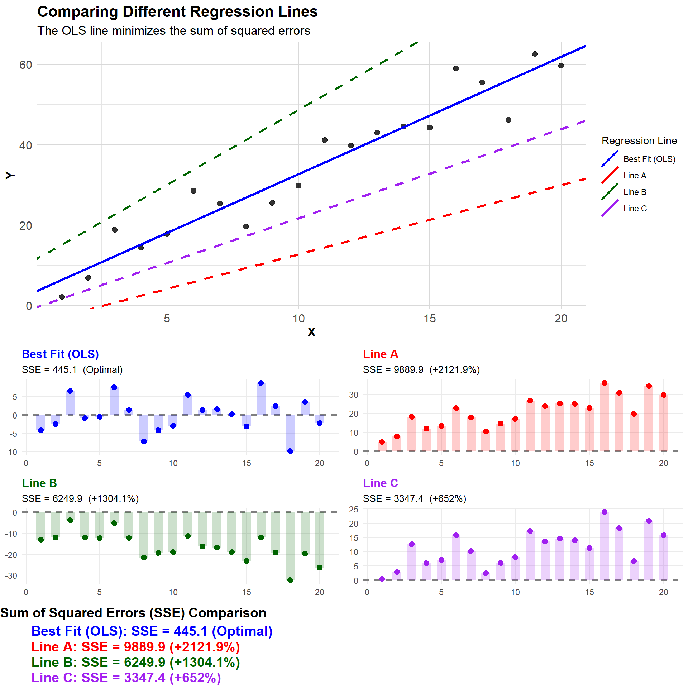
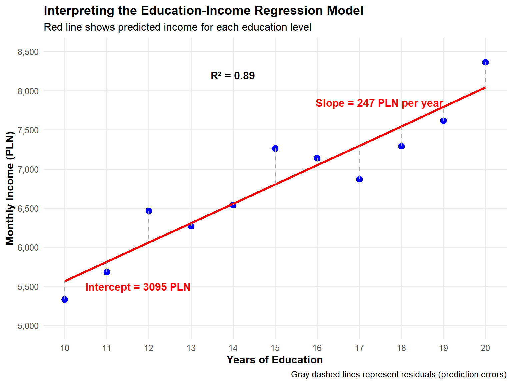
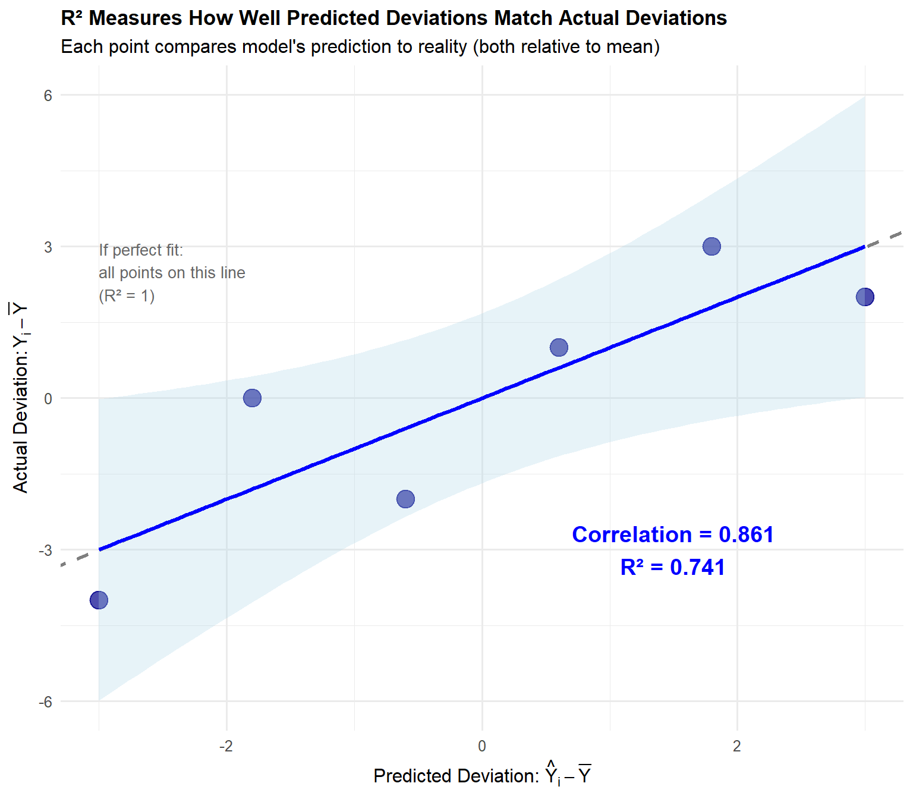
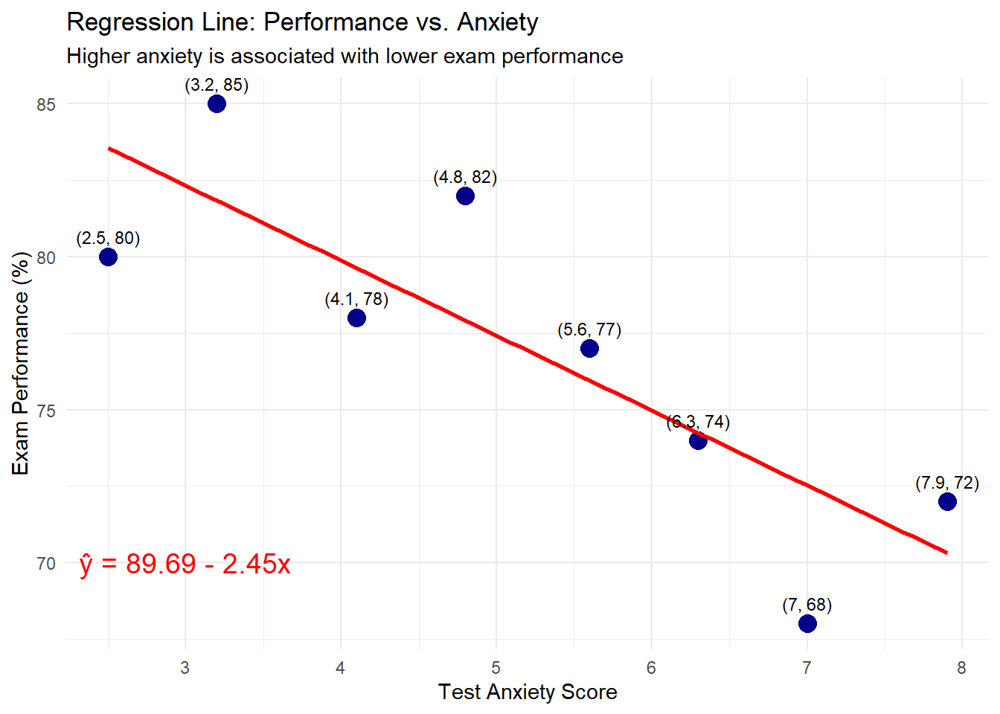

x <- c(1, 2, 3, 4, 5)
y <- c(2, 4, 5, 4, 5)
cov(x, y)[1] 1.5The distinction between correlation and causation represents a fundamental challenge in statistical analysis. While correlation measures the statistical association between variables, causation implies a direct influence of one variable on another. This chapter explores this distinction and examines common issues that lead to spurious correlations in empirical research.
Statistical relationships form the backbone of data-driven decision making across disciplines—from economics and public health to psychology and environmental science. Understanding when a relationship indicates mere association versus genuine causality is crucial for valid inference and effective policy recommendations.
Covariance measures how two variables vary together, indicating both the direction and magnitude of their linear relationship.
Formula: cov(X,Y) = \frac{\sum_{i=1}^n (x_i - \bar{x})(y_i - \bar{y})}{n - 1}
Where:
Covariance produces positive values when variables tend to increase together, negative values when one increases as the other decreases, and values near zero when there’s little linear relationship. However, the scale-dependence of covariance makes interpretation challenging across different measurement units.
Manual Calculation Example:
Let’s calculate the covariance for two variables:
| Step | Description | Calculation |
|---|---|---|
| 1 | Calculate means | \bar{x} = 3, \bar{y} = 4 |
| 2 | Calculate (x_i - \bar{x})(y_i - \bar{y}) for each pair | (-2)(-2) = 4 |
| (-1)(0) = 0 | ||
| (0)(1) = 0 | ||
| (1)(0) = 0 | ||
| (2)(1) = 2 | ||
| 3 | Sum the results | 4 + 0 + 0 + 0 + 2 = 6 |
| 4 | Divide by (n-1) | 6 / 4 = 1.5 |
R calculation:
x <- c(1, 2, 3, 4, 5)
y <- c(2, 4, 5, 4, 5)
cov(x, y)[1] 1.5Interpretation: - The positive covariance (1.5) indicates that x and y tend to increase together.
Pros:
Cons:
To address the scale-dependency limitations of covariance, the correlation coefficient standardizes the measure to a range between -1 and 1.
Pearson’s Correlation Formula: r = \frac{cov(X,Y)}{s_X s_Y} = \frac{\sum_{i=1}^n (x_i - \bar{x})(y_i - \bar{y})}{\sqrt{\sum_{i=1}^n (x_i - \bar{x})^2 \sum_{i=1}^n (y_i - \bar{y})^2}}
Where:
The correlation coefficient provides a standardized measure of linear association that facilitates comparison across different variable pairs and datasets.
The concepts of correlation and regression were formalized in the late 19th century by Sir Francis Galton and later expanded by Karl Pearson. Their work revolutionized data analysis by providing mathematical frameworks to quantify relationships between variables. Today, these techniques remain fundamental in fields ranging from genomics to finance, forming the basis for more advanced statistical methods.
In the next sections, we’ll explore correlation and regression in depth, examining their assumptions, limitations, and applications to real-world data analysis challenges.
Correlation measures the strength and direction of the linear relationship between two variables. The Pearson correlation coefficient (r) ranges from -1 to +1:
The following visualizations demonstrate different types of relationships:
# Generate sample data with different correlation patterns
n <- 100 # sample size
# Positive linear correlation (education and income)
years_education <- rnorm(n, 14, 3)
annual_income <- 15000 + 3500 * years_education + rnorm(n, 0, 10000)
# Negative linear correlation (screen time and sleep)
screen_time <- runif(n, 1, 8)
sleep_hours <- 9 - 0.5 * screen_time + rnorm(n, 0, 1)
# No correlation (random data)
x_random <- rnorm(n, 50, 10)
y_random <- rnorm(n, 50, 10)
# Non-linear correlation (quadratic relationship)
hours_studied <- runif(n, 0, 12)
test_score <- -2 * (hours_studied - 6)^2 + 90 + rnorm(n, 0, 5)
# Create data frames
positive_data <- data.frame(x = years_education, y = annual_income,
label = "Positive Linear: Education & Income")
negative_data <- data.frame(x = screen_time, y = sleep_hours,
label = "Negative Linear: Screen Time & Sleep")
no_corr_data <- data.frame(x = x_random, y = y_random,
label = "No Correlation: Random Variables")
nonlinear_data <- data.frame(x = hours_studied, y = test_score,
label = "Non-linear: Study Hours & Test Score")
# Combine data for faceted plot
all_data <- rbind(
positive_data,
negative_data,
no_corr_data,
nonlinear_data
)
# Create faceted plot
ggplot(all_data, aes(x = x, y = y)) +
geom_point(alpha = 0.6, color = "darkblue") +
geom_smooth(method = "lm", color = "red", se = TRUE) +
facet_wrap(~ label, scales = "free") +
labs(
title = "Different Types of Correlations",
x = "",
y = ""
) +
theme_minimal() +
theme(strip.text = element_text(size = 9, face = "bold"))`geom_smooth()` using formula = 'y ~ x'
For the non-linear relationship, a linear model is inadequate. A quadratic model better captures the relationship:
ggplot(nonlinear_data, aes(x = x, y = y)) +
geom_point(alpha = 0.6, color = "darkblue") +
geom_smooth(method = "lm", color = "red", linetype = "dashed", se = FALSE) +
geom_smooth(method = "lm", formula = y ~ x + I(x^2), color = "green", se = TRUE) +
labs(
title = "Non-linear Correlation: Study Hours & Test Score",
subtitle = "Linear model (red) vs. Quadratic model (green)",
x = "Hours Studied",
y = "Test Score"
) +
theme_minimal()`geom_smooth()` using formula = 'y ~ x'
Pearson correlation measures the strength and direction of the linear relationship between two continuous variables.
Formula: r = \frac{cov(X,Y)}{s_X s_Y} = \frac{\sum (x_i - \bar{x})(y_i - \bar{y})}{\sqrt{\sum (x_i - \bar{x})^2 \sum (y_i - \bar{y})^2}}
Manual Calculation Example:
Using the same data as above:
| Step | Description | Calculation |
|---|---|---|
| 1 | Calculate covariance | (From previous calculation) 1.5 |
| 2 | Calculate standard deviations | s_X = \sqrt{\frac{10}{4}} = 1.58, s_Y = \sqrt{\frac{6}{4}} = 1.22 |
| 3 | Divide covariance by product of standard deviations | 1.5 / (1.58 * 1.22) = 0.7746 |
R calculation:
cor(x, y, method = "pearson")[1] 0.7745967Interpretation: - The correlation coefficient of 0.7746 indicates a strong positive linear relationship between x and y.
Pros:
Cons:
Spearman correlation measures the strength and direction of the monotonic relationship between two variables, which can be continuous or ordinal.
Formula: \rho = 1 - \frac{6 \sum d_i^2}{n(n^2 - 1)}, where d_i is the difference between ranks.
Ranks are simply position numbers in an ordered dataset:
Order data from smallest to largest value
Assign consecutive natural numbers:
We have 5 students with heights:
Height: 165, 182, 170, 168, 175
Ranks: 1, 5, 3, 2, 4For data with ties (e.g., grades):
Grades: 2, 3, 3, 4, 5
Ranks: 1, 2.5, 2.5, 4, 5Manual Calculation Example:
Let’s use slightly different data:
| Step | Description | Calculation |
|---|---|---|
| 1 | Rank both variables | x_rank: 1, 2, 3, 4, 5 |
| y_rank: 1, 3, 2, 5, 4 | ||
| 2 | Calculate differences in ranks (d) | 0, -1, 1, -1, 1 |
| 3 | Square the differences | 0, 1, 1, 1, 1 |
| 4 | Sum the squared differences | \sum d_i^2 = 4 |
| 5 | Apply the formula | \rho = 1 - \frac{6(4)}{5(5^2 - 1)} = 0.8 |
R calculation:
x <- c(1, 2, 3, 4, 5)
y <- c(1, 3, 2, 5, 4)
cor(x, y, method = "spearman")[1] 0.8Interpretation: - The Spearman correlation of 0.8 indicates a strong positive monotonic relationship between x and y.
Pros:
Cons:
Cross-tabulation (contingency table) shows the relationship between two categorical variables.
Example:
Let’s create a cross-tabulation of two variables: - Education level: High School, College, Graduate - Employment status: Employed, Unemployed
education <- factor(c("High School", "College", "Graduate", "High School", "College", "Graduate", "High School", "College", "Graduate"))
employment <- factor(c("Employed", "Employed", "Employed", "Unemployed", "Employed", "Employed", "Unemployed", "Unemployed", "Employed"))
table(education, employment) employment
education Employed Unemployed
College 2 1
Graduate 3 0
High School 1 2Interpretation:
Pros:
Cons:
When deciding which bivariate statistic to use, consider:
Data type:
Relationship type:
Presence of outliers:
Distribution:
Sample size:
Remember, it’s often valuable to use multiple measures and visualizations (like scatter plots) to get a comprehensive understanding of the relationship between variables.
Regression analysis provides a framework for modeling the relationship between a dependent variable and one or more independent variables. The Ordinary Least Squares (OLS) method minimizes the sum of squared residuals to find the line of best fit.
The simple linear regression model can be expressed as:
Y_i = \beta_0 + \beta_1 X_i + \varepsilon_i
Where:
Y_i is the dependent variable for observation i
X_i is the independent variable for observation i
\beta_0 is the intercept
\beta_1 is the slope coefficient
\varepsilon_i is the error term (residuals)
Multiple regression extends this to include several predictors:
Y_i = \beta_0 + \beta_1 X_{1i} + \beta_2 X_{2i} + ... + \beta_k X_{ki} + \varepsilon_i
In regression analysis, we want to find a line that best represents the relationship between our variables. But what makes a line the “best”?
Imagine you have a scatter plot of data points. There are infinitely many lines you could draw through these points. The line of best fit is the one that minimizes the overall distance between the line and all data points.
The OLS method defines “best fit” as the line that minimizes the sum of squared errors:
SSE = \sum_{i=1}^{n} (Y_i - \hat{Y}_i)^2 = \sum_{i=1}^{n} e_i^2
Where:
But why square the errors? There are four main reasons:
Treating positive and negative errors equally: By squaring, we ensure that points above and below the line contribute equally to our measure of fit.
Avoiding error cancellation: If we used the simple sum of errors \sum (Y_i - \hat{Y}_i), we would always get zero for an OLS regression line because positive and negative deviations cancel each other out. In fact, it can be mathematically proven that for an OLS regression line, the sum of residuals always equals zero: \sum e_i = 0. Squaring prevents this cancellation effect.
Penalizing large errors more: Squaring gives more weight to large errors, making the line more responsive to outliers.
Mathematical advantages: The quadratic objective function has several mathematical advantages:
# Generate sample data
set.seed(42)
x <- runif(30, 0, 10)
y <- 2 + 0.5*x + rnorm(30, 0, 1.5)
# Fit model
model <- lm(y ~ x)
# Create base plot
plot(x, y, pch=16, col="darkblue",
main="Visualization of Ordinary Least Squares (OLS)",
xlab="X", ylab="Y")
# Add regression line
abline(model, col="red", lwd=2)
# Add residual lines
segments(x, y, x, fitted(model), col="green", lwd=1.5)
# Add legend
legend("topleft", legend=c("Data points", "Regression line", "Residuals"),
col=c("darkblue", "red", "green"), pch=c(16, NA, NA),
lty=c(NA, 1, 1), lwd=c(NA, 2, 1.5))
This visualization shows how the least squares method minimizes the squares of the lengths of the green lines (residuals). The red line has been chosen so that the sum of squares of these deviations is the smallest of all possible straight lines.
To understand the concept visually:
# Load required libraries
library(ggplot2)
library(ggrepel) # For better label placement
# Create sample data
set.seed(123)
x <- 1:20
y <- 2 + 3*x + rnorm(20, 0, 5)
data <- data.frame(x = x, y = y)
# Fit regression model
model <- lm(y ~ x, data = data)
coef <- coefficients(model)
preds <- predict(model)
# Calculate residuals
data$predicted <- preds
data$residuals <- y - preds
# Select only a few points to label (to reduce clutter)
points_to_label <- c(5, 15)
# Create plot
ggplot(data, aes(x = x, y = y)) +
# Add light gray grid for better reference
theme_minimal() +
theme(
panel.grid.minor = element_line(color = "gray90"),
panel.grid.major = element_line(color = "gray85")
) +
# Add regression line
geom_abline(intercept = coef[1], slope = coef[2], color = "blue", size = 1.2) +
# Add residual lines with higher visibility
geom_segment(aes(xend = x, yend = predicted), color = "red", size = 0.9) +
# Add squared error visualization - clearer squares
geom_rect(aes(xmin = x - abs(residuals)/2, xmax = x + abs(residuals)/2,
ymin = predicted, ymax = predicted + sign(residuals) * abs(residuals)),
fill = "tomato", alpha = 0.3, color = "red", size = 0.5) +
# Add data points on top
geom_point(size = 3, fill = "black", shape = 21, color = "white") +
# Add labels for selected residuals with better visibility
geom_text_repel(
data = data[points_to_label, ],
aes(label = paste("ε =", round(residuals, 1))),
size = 4.5,
bg.color = "white",
bg.r = 0.15,
box.padding = 0.5,
point.padding = 0.5,
force = 10,
color = "darkred",
min.segment.length = 0
) +
# Add annotation for squared errors with better visibility
geom_text_repel(
data = data[points_to_label, ],
aes(x = x, y = predicted + sign(residuals) * abs(residuals)/2,
label = paste("ε² =", round(residuals^2, 1))),
size = 4.5,
bg.color = "white",
bg.r = 0.15,
color = "darkred",
box.padding = 0.5,
force = 5
) +
# Add prominent SSE annotation with box
annotate("rect", xmin = max(x) - 7, xmax = max(x),
ymin = min(y) + 3, ymax = min(y) + 7,
fill = "lightyellow", color = "gray50", alpha = 0.7) +
annotate("text", x = max(x) - 3.5, y = min(y) + 5,
label = paste("SSE =", round(sum(data$residuals^2), 1)),
size = 5, color = "darkred", fontface = "bold") +
# Improved titles
labs(title = "Visualizing the Sum of Squared Errors",
subtitle = "Red squares represent squared errors (area = ε²)",
x = "X", y = "Y") +
theme(
plot.title = element_text(face = "bold", size = 16),
plot.subtitle = element_text(size = 12),
axis.title = element_text(size = 12, face = "bold"),
axis.text = element_text(size = 11)
)Warning: Using `size` aesthetic for lines was deprecated in ggplot2 3.4.0.
ℹ Please use `linewidth` instead.
A simple but effective way to visualize the concept of “best fit” is to compare multiple lines and their resulting SSE values:
# Load required libraries
library(ggplot2)
library(gridExtra)
Attaching package: 'gridExtra'The following object is masked from 'package:dplyr':
combine# Create sample data
set.seed(123)
x <- 1:20
y <- 2 + 3*x + rnorm(20, 0, 5)
data <- data.frame(x = x, y = y)
# Fit regression model
model <- lm(y ~ x, data = data)
coef <- coefficients(model)
# Define different lines: optimal and sub-optimal with clearer differences
lines <- data.frame(
label = c("Best Fit (OLS)", "Line A", "Line B", "Line C"),
intercept = c(coef[1], coef[1] - 8, coef[1] + 8, coef[1] - 4),
slope = c(coef[2], coef[2] - 1.2, coef[2] + 0.8, coef[2] - 0.7)
)
# Calculate SSE for each line
lines$sse <- sapply(1:nrow(lines), function(i) {
predicted <- lines$intercept[i] + lines$slope[i] * x
sum((y - predicted)^2)
})
# Add percentage increase over optimal SSE
lines$pct_increase <- round((lines$sse / lines$sse[1] - 1) * 100, 1)
lines$pct_text <- ifelse(lines$label == "Best Fit (OLS)",
"Optimal",
paste0("+", lines$pct_increase, "%"))
# Assign distinct colors for better visibility
line_colors <- c("Best Fit (OLS)" = "blue",
"Line A" = "red",
"Line B" = "darkgreen",
"Line C" = "purple")
# Create data for mini residual plots
mini_data <- data.frame()
for(i in 1:nrow(lines)) {
line_data <- data.frame(
x = x,
y = y,
predicted = lines$intercept[i] + lines$slope[i] * x,
residuals = y - (lines$intercept[i] + lines$slope[i] * x),
line = lines$label[i]
)
mini_data <- rbind(mini_data, line_data)
}
# Create main comparison plot with improved visibility
p1 <- ggplot(data, aes(x = x, y = y)) +
# Add background grid for reference
theme_minimal() +
theme(
panel.grid.minor = element_line(color = "gray90"),
panel.grid.major = element_line(color = "gray85"),
plot.title = element_text(size = 16, face = "bold"),
plot.subtitle = element_text(size = 13),
axis.title = element_text(size = 13, face = "bold"),
axis.text = element_text(size = 12)
) +
# Add data points
geom_point(size = 2.5, alpha = 0.8) +
# Add lines with improved visibility
geom_abline(data = lines,
aes(intercept = intercept, slope = slope,
color = label, linetype = label == "Best Fit (OLS)"),
size = 1.2) +
# Use custom colors
scale_color_manual(values = line_colors) +
scale_linetype_manual(values = c("TRUE" = "solid", "FALSE" = "dashed"), guide = "none") +
# Better legends
labs(title = "Comparing Different Regression Lines",
subtitle = "The OLS line minimizes the sum of squared errors",
x = "X", y = "Y",
color = "Regression Line") +
guides(color = guide_legend(override.aes = list(size = 2)))
# Create mini residual plots with improved visibility
p_mini <- list()
for(i in 1:nrow(lines)) {
line_data <- subset(mini_data, line == lines$label[i])
p_mini[[i]] <- ggplot(line_data, aes(x = x, y = residuals)) +
# Add reference line
geom_hline(yintercept = 0, linetype = "dashed", size = 0.8, color = "gray50") +
# Add residual points with line color
geom_point(color = line_colors[lines$label[i]], size = 2.5) +
# Add squares to represent squared errors
geom_rect(aes(xmin = x - 0.3, xmax = x + 0.3,
ymin = 0, ymax = residuals),
fill = line_colors[lines$label[i]], alpha = 0.2) +
# Improved titles
labs(title = lines$label[i],
subtitle = paste("SSE =", round(lines$sse[i], 1),
ifelse(i == 1, " (Optimal)",
paste0(" (+", lines$pct_increase[i], "%)"))),
x = NULL, y = NULL) +
theme_minimal() +
theme(
plot.title = element_text(size = 12, face = "bold", color = line_colors[lines$label[i]]),
plot.subtitle = element_text(size = 10),
panel.grid.minor = element_blank()
)
}
# Create SSE comparison table with better visibility
sse_df <- data.frame(
x = rep(1, nrow(lines)),
y = nrow(lines):1,
label = paste0(lines$label, ": SSE = ", round(lines$sse, 1), " (", lines$pct_text, ")"),
color = line_colors[lines$label]
)
sse_table <- ggplot(sse_df, aes(x = x, y = y, label = label, color = color)) +
geom_text(hjust = 0, size = 5, fontface = "bold") +
scale_color_identity() +
theme_void() +
xlim(1, 10) +
ylim(0.5, nrow(lines) + 0.5) +
labs(title = "Sum of Squared Errors (SSE) Comparison") +
theme(plot.title = element_text(hjust = 0, face = "bold", size = 14))
# Arrange the plots with better spacing
grid.arrange(
p1,
arrangeGrob(p_mini[[1]], p_mini[[2]], p_mini[[3]], p_mini[[4]],
ncol = 2, padding = unit(1, "cm")),
sse_table,
ncol = 1,
heights = c(4, 3, 1)
)
To illustrate the process of finding the minimum SSE, we can create a sequence that passes through the optimal point, showing how the SSE first decreases to a minimum and then increases again:
# Create sample data
set.seed(123)
x <- 1:20
y <- 2 + 3*x + rnorm(20, 0, 5)
data <- data.frame(x = x, y = y)
# Fit regression model
model <- lm(y ~ x, data = data)
coef <- coefficients(model)
# Create a sequence of steps that passes through the optimal OLS line
steps <- 9 # Use odd number to have a middle point at the optimum
step_seq <- data.frame(
step = 1:steps,
intercept = seq(coef[1] - 8, coef[1] + 8, length.out = steps),
slope = seq(coef[2] - 1.5, coef[2] + 1.5, length.out = steps)
)
# Mark the middle step (optimal OLS solution)
optimal_step <- ceiling(steps/2)
# Calculate SSE for each step
step_seq$sse <- sapply(1:nrow(step_seq), function(i) {
predicted <- step_seq$intercept[i] + step_seq$slope[i] * x
sum((y - predicted)^2)
})
# Create a "journey through the SSE valley" plot
p2 <- ggplot(data, aes(x = x, y = y)) +
geom_point(size = 2, alpha = 0.7) +
geom_abline(data = step_seq,
aes(intercept = intercept, slope = slope,
color = sse, group = step),
size = 1) +
# Highlight the optimal line
geom_abline(intercept = step_seq$intercept[optimal_step],
slope = step_seq$slope[optimal_step],
color = "green", size = 1.5) +
scale_color_gradient(low = "blue", high = "red") +
labs(title = "Journey Through the SSE Valley",
subtitle = "The green line represents the OLS solution with minimum SSE",
color = "SSE Value") +
theme_minimal()
# Create an SSE valley plot
p3 <- ggplot(step_seq, aes(x = step, y = sse)) +
geom_line(size = 1) +
geom_point(size = 3, aes(color = sse)) +
scale_color_gradient(low = "blue", high = "red") +
# Highlight the optimal point
geom_point(data = step_seq[optimal_step, ], aes(x = step, y = sse),
size = 5, color = "green") +
# Add annotation
annotate("text", x = optimal_step, y = step_seq$sse[optimal_step] * 1.1,
label = "Minimum SSE", color = "darkgreen", fontface = "bold") +
labs(title = "The SSE Valley: Decreasing Then Increasing",
subtitle = "The SSE reaches its minimum at the OLS solution",
x = "Step",
y = "Sum of Squared Errors") +
theme_minimal() +
theme(legend.position = "none")
# Display both plots
grid.arrange(p2, p3, ncol = 1, heights = c(3, 2))The OLS estimator for the coefficients minimizes:
\sum_{i=1}^{n} (Y_i - \hat{Y}_i)^2
Where \hat{Y}_i is the predicted value for observation i.
For OLS to produce unbiased estimates, several assumptions must hold:
Linearity: The relationship between X and Y is linear
Independence: Observations are independent of each other
Homoscedasticity: Error variance is constant across all levels of X
Normality: Errors are normally distributed
No multicollinearity: Predictors are not perfectly correlated
Exogeneity: The error term is uncorrelated with the predictors
The last assumption is particularly important for our discussion of spurious correlations. Violations of the exogeneity assumption lead to endogeneity problems, which we will discuss later.
In R, the lm() function fits linear regression models:
model <- lm(y ~ x, data = data_frame)Let’s create a simple dataset to understand regression output better. Imagine we’re studying how years of education affect annual income:
# Create a simple dataset - this is our Data Generating Process (DGP)
set.seed(123) # For reproducibility
education_years <- 10:20 # Education from 10 to 20 years
n <- length(education_years)
# True parameters in our model - using more realistic values for Poland
true_intercept <- 3000 # Base monthly income with no education (in PLN)
true_slope <- 250 # Each year of education increases monthly income by 250 PLN
# Generate monthly incomes with some random noise
income <- true_intercept + true_slope * education_years + rnorm(n, mean=0, sd=300)
# Create our dataset
education_income <- data.frame(
education = education_years,
income = income
)
# Let's visualize our data
library(ggplot2)
ggplot(education_income, aes(x = education, y = income)) +
geom_point(size = 3, color = "blue") +
geom_smooth(method = "lm", color = "red", se = TRUE) +
scale_y_continuous(limits = c(5000, 8500),
breaks = seq(5000, 8500, by = 500),
labels = scales::comma) +
scale_x_continuous(breaks = 10:20) +
labs(
title = "Relationship between Education and Income in Poland",
x = "Years of Education",
y = "Monthly Income (PLN)",
subtitle = "Red line shows the estimated linear relationship"
) +
theme_minimal(base_size = 12) +
theme(
panel.grid.minor = element_blank(),
plot.title = element_text(face = "bold"),
axis.title = element_text(face = "bold")
) +
annotate("text", x = 11, y = 8000,
label = "Each point represents\none person's data",
hjust = 0, size = 4)`geom_smooth()` using formula = 'y ~ x'
Now let’s fit a linear regression model to this data:
# Fit a simple regression model
edu_income_model <- lm(income ~ education, data = education_income)
# Display the results
model_summary <- summary(edu_income_model)
model_summary
Call:
lm(formula = income ~ education, data = education_income)
Residuals:
Min 1Q Median 3Q Max
-427.72 -206.04 -38.12 207.32 460.78
Coefficients:
Estimate Std. Error t value Pr(>|t|)
(Intercept) 3095.3 447.6 6.915 6.95e-05 ***
education 247.2 29.2 8.467 1.40e-05 ***
---
Signif. codes: 0 '***' 0.001 '**' 0.01 '*' 0.05 '.' 0.1 ' ' 1
Residual standard error: 306.3 on 9 degrees of freedom
Multiple R-squared: 0.8885, Adjusted R-squared: 0.8761
F-statistic: 71.69 on 1 and 9 DF, p-value: 1.403e-05Let’s break down what each part of this output means in simple terms:
At the top, you see income ~ education, which means we’re predicting income based on education.
These show how far our predictions are from the actual values. Ideally, they should be centered around zero.
| Estimate | Std. Error | t value | Pr(>|t|) | |
|---|---|---|---|---|
| (Intercept) | 3095.27 | 447.63 | 6.91 | 0 |
| education | 247.23 | 29.20 | 8.47 | 0 |
Intercept (\beta_0):
Value: Approximately 3095
Interpretation: This is the predicted monthly income for someone with 0 years of education
Note: Sometimes the intercept isn’t meaningful in real-world terms, especially if x=0 is outside your data range
Education (\beta_1):
Value: Approximately 247
Interpretation: For each additional year of education, we expect monthly income to increase by this amount in PLN
This is our main coefficient of interest!
Standard Error:
Measures how precise our estimates are
Smaller standard errors mean more precise estimates
Think of it as “give or take how much” for our coefficients
t value:
This is the coefficient divided by its standard error
It tells us how many standard errors away from zero our coefficient is
Larger absolute t values (above 2) suggest the effect is statistically significant
p-value:
The probability of seeing our result (or something more extreme) if there was actually no relationship
Typically, p < 0.05 is considered statistically significant
For education, p = 1.4e-05, which is significant!
| Statistic | Value |
|---|---|
| R-squared | 0.888 |
| Adjusted R-squared | 0.876 |
| F-statistic | 71.686 |
| p-value | 0.000 |
R-squared:
Value: 0.888
Interpretation: 89% of the variation in income is explained by education
Higher is better, but be cautious of very high values (could indicate overfitting)
F-statistic:
Tests whether the model as a whole is statistically significant
A high F-statistic with a low p-value indicates a significant model
Let’s visualize what our model actually tells us:
# Predicted values
education_income$predicted <- predict(edu_income_model)
education_income$residuals <- residuals(edu_income_model)
# Create a more informative plot
ggplot(education_income, aes(x = education, y = income)) +
# Actual data points
geom_point(size = 3, color = "blue") +
# Regression line
geom_line(aes(y = predicted), color = "red", size = 1.2) +
# Residual lines
geom_segment(aes(xend = education, yend = predicted),
color = "darkgray", linetype = "dashed") +
# Set proper scales
scale_y_continuous(limits = c(5000, 8500),
breaks = seq(5000, 8500, by = 500),
labels = scales::comma) +
scale_x_continuous(breaks = 10:20) +
# Annotations
annotate("text", x = 19, y = 7850,
label = paste("Slope =", round(coef(edu_income_model)[2]), "PLN per year"),
color = "red", hjust = 1, fontface = "bold") +
annotate("text", x = 10.5, y = 5500,
label = paste("Intercept =", round(coef(edu_income_model)[1]), "PLN"),
color = "red", hjust = 0, fontface = "bold") +
annotate("text", x = 14, y = 8200,
label = paste("R² =", round(model_summary$r.squared, 2)),
color = "black", fontface = "bold") +
# Labels
labs(
title = "Interpreting the Education-Income Regression Model",
subtitle = "Red line shows predicted income for each education level",
x = "Years of Education",
y = "Monthly Income (PLN)",
caption = "Gray dashed lines represent residuals (prediction errors)"
) +
theme_minimal(base_size = 12) +
theme(
panel.grid.minor = element_blank(),
plot.title = element_text(face = "bold"),
axis.title = element_text(face = "bold")
)
A person with 16 years of education (college graduate) would be predicted to earn about: \hat{Y} = 3095 + 247 \times 16 = 7051 \text{ PLN monthly}
The model suggests that each additional year of education is associated with a 247 PLN increase in monthly income.
Our model explains approximately 89% of the variation in income in our sample.
The relationship is statistically significant (p < 0.001), meaning it’s very unlikely to observe this relationship if education truly had no effect on income.
Correlation ≠ Causation: Our model shows association, not necessarily causation
Omitted Variables: Other factors might influence both education and income
Extrapolation: Be careful predicting outside the range of your data
Linear Relationship: We’ve assumed the relationship is linear, which may not always be true
Check model assumptions (linearity, normality of residuals, etc.)
Consider adding more variables (multiple regression)
Try transformations if relationships aren’t linear
Explore interaction effects
Spurious correlation occurs when variables appear related but the relationship is not causal. These misleading correlations arise from several sources:
With sufficient data mining or small sample sizes, seemingly meaningful correlations can emerge purely by chance. This is especially problematic when researchers conduct multiple analyses without appropriate corrections for multiple comparisons, a practice known as “p-hacking.”
# Create a realistic example of spurious correlation based on actual country data
# Using country data on chocolate consumption and Nobel prize winners
# This example is inspired by a published correlation (Messerli, 2012)
set.seed(123)
countries <- c("Switzerland", "Sweden", "Denmark", "Belgium", "Austria",
"Norway", "Germany", "Netherlands", "United Kingdom", "Finland",
"France", "Italy", "Spain", "Poland", "Greece", "Portugal")
# Create realistic data: Chocolate consumption correlates with GDP per capita
# Higher GDP countries tend to consume more chocolate and have better research funding
gdp_per_capita <- c(87097, 58977, 67218, 51096, 53879, 89154, 51860, 57534,
46510, 53982, 43659, 35551, 30416, 17841, 20192, 24567)
# Normalize GDP values to make them more manageable
gdp_normalized <- (gdp_per_capita - min(gdp_per_capita)) /
(max(gdp_per_capita) - min(gdp_per_capita))
# More realistic chocolate consumption - loosely based on real consumption patterns
# plus some randomness, but influenced by GDP
chocolate_consumption <- 4 + 8 * gdp_normalized + rnorm(16, 0, 0.8)
# Nobel prizes - also influenced by GDP (research funding) with noise
# The relationship is non-linear, but will show up as correlated
nobel_prizes <- 2 + 12 * gdp_normalized^1.2 + rnorm(16, 0, 1.5)
# Create dataframe
country_data <- data.frame(
country = countries,
chocolate = round(chocolate_consumption, 1),
nobel = round(nobel_prizes, 1),
gdp = gdp_per_capita
)
# Fit regression model - chocolate vs nobel without controlling for GDP
chocolate_nobel_model <- lm(nobel ~ chocolate, data = country_data)
# Better model that reveals the confounding
full_model <- lm(nobel ~ chocolate + gdp, data = country_data)
# Plot the apparent relationship
ggplot(country_data, aes(x = chocolate, y = nobel)) +
geom_point(color = "darkblue", size = 3, alpha = 0.7) +
geom_text(aes(label = country), hjust = -0.2, vjust = 0, size = 3) +
geom_smooth(method = "lm", color = "red", se = TRUE) +
labs(
title = "Apparent Correlation: Chocolate Consumption vs. Nobel Prizes",
subtitle = "Demonstrates how confounding variables create spurious correlations",
x = "Chocolate Consumption (kg per capita)",
y = "Nobel Prizes per 10M Population"
) +
theme_minimal()`geom_smooth()` using formula = 'y ~ x'# Show regression results
summary(chocolate_nobel_model)
Call:
lm(formula = nobel ~ chocolate, data = country_data)
Residuals:
Min 1Q Median 3Q Max
-1.9080 -1.4228 0.0294 0.5962 3.2977
Coefficients:
Estimate Std. Error t value Pr(>|t|)
(Intercept) -4.0518 1.3633 -2.972 0.0101 *
chocolate 1.3322 0.1682 7.921 1.54e-06 ***
---
Signif. codes: 0 '***' 0.001 '**' 0.01 '*' 0.05 '.' 0.1 ' ' 1
Residual standard error: 1.626 on 14 degrees of freedom
Multiple R-squared: 0.8176, Adjusted R-squared: 0.8045
F-statistic: 62.75 on 1 and 14 DF, p-value: 1.536e-06# Demonstrate multiple testing problem
p_values <- numeric(100)
for(i in 1:100) {
# Generate two completely random variables with n=20
x <- rnorm(20)
y <- rnorm(20)
# Test for correlation and store p-value
p_values[i] <- cor.test(x, y)$p.value
}
# How many "significant" results at alpha = 0.05?
sum(p_values < 0.05)[1] 3# Visualize the multiple testing phenomenon
hist(p_values, breaks = 20, main = "P-values from 100 Tests of Random Data",
xlab = "P-value", col = "lightblue", border = "white")
abline(v = 0.05, col = "red", lwd = 2, lty = 2)
text(0.15, 20, paste("Approximately", sum(p_values < 0.05),
"tests are 'significant'\nby random chance alone!"),
col = "darkred")
This example demonstrates how seemingly compelling correlations can emerge between unrelated variables due to confounding factors and chance. The correlation between chocolate consumption and Nobel prizes appears significant (p < 0.05) when analyzed directly, even though it’s explained by a third variable - national wealth (GDP per capita).
Wealthier countries typically consume more chocolate and simultaneously invest more in education and research, leading to more Nobel prizes. Without controlling for this confounding factor, we would mistakenly conclude a direct relationship between chocolate and Nobel prizes.
The multiple testing demonstration further illustrates why spurious correlations appear so frequently in research. When conducting 100 statistical tests on completely random data, we expect approximately 5 “significant” results at α = 0.05 purely by chance. In real research settings where hundreds of variables might be analyzed, the probability of finding false positive correlations increases dramatically.
This example underscores three critical points:
Such findings explain why replication is essential in research and why most initial “discoveries” fail to hold up in subsequent studies.
Reverse causality occurs when the assumed direction of causation is incorrect. Consider this example of anxiety and relaxation techniques:
# Create sample data
n <- 200
anxiety_level <- runif(n, 1, 10) # Anxiety level (1-10)
# People with higher anxiety tend to use more relaxation techniques
relaxation_techniques <- 1 + 0.7 * anxiety_level + rnorm(n, 0, 1)
reverse_data <- data.frame(
anxiety = anxiety_level,
relaxation = relaxation_techniques
)
# Fit models in both directions
model_incorrect <- lm(anxiety ~ relaxation, data = reverse_data)
model_correct <- lm(relaxation ~ anxiety, data = reverse_data)
# Show regression results
summary(model_incorrect)
Call:
lm(formula = anxiety ~ relaxation, data = reverse_data)
Residuals:
Min 1Q Median 3Q Max
-2.9651 -0.7285 -0.0923 0.7247 3.7996
Coefficients:
Estimate Std. Error t value Pr(>|t|)
(Intercept) -0.09482 0.21973 -0.432 0.667
relaxation 1.15419 0.04105 28.114 <2e-16 ***
---
Signif. codes: 0 '***' 0.001 '**' 0.01 '*' 0.05 '.' 0.1 ' ' 1
Residual standard error: 1.182 on 198 degrees of freedom
Multiple R-squared: 0.7997, Adjusted R-squared: 0.7987
F-statistic: 790.4 on 1 and 198 DF, p-value: < 2.2e-16summary(model_correct)
Call:
lm(formula = relaxation ~ anxiety, data = reverse_data)
Residuals:
Min 1Q Median 3Q Max
-3.15178 -0.51571 -0.00222 0.55513 2.04334
Coefficients:
Estimate Std. Error t value Pr(>|t|)
(Intercept) 1.05726 0.15286 6.917 6.24e-11 ***
anxiety 0.69284 0.02464 28.114 < 2e-16 ***
---
Signif. codes: 0 '***' 0.001 '**' 0.01 '*' 0.05 '.' 0.1 ' ' 1
Residual standard error: 0.9161 on 198 degrees of freedom
Multiple R-squared: 0.7997, Adjusted R-squared: 0.7987
F-statistic: 790.4 on 1 and 198 DF, p-value: < 2.2e-16# Visualize
ggplot(reverse_data, aes(x = relaxation, y = anxiety)) +
geom_point(alpha = 0.6, color = "darkblue") +
geom_smooth(method = "lm", color = "red") +
labs(
title = "Anxiety and Relaxation Techniques",
subtitle = "Example of reverse causality",
x = "Use of Relaxation Techniques (frequency/week)",
y = "Anxiety Level (1-10 scale)"
) +
theme_minimal()`geom_smooth()` using formula = 'y ~ x'
Both regression models show statistically significant relationships, but they imply different causal mechanisms. The incorrect model suggests that relaxation techniques increase anxiety, while the correct model reflects the true data generating process: anxiety drives the use of relaxation techniques.
Collider bias occurs when conditioning on a variable that is affected by both the independent and dependent variables of interest, creating an artificial relationship between variables that are actually independent.
# Create sample data
n <- 1000
# Generate two independent variables (no relationship between them)
intelligence <- rnorm(n, 100, 15) # IQ score
family_wealth <- rnorm(n, 50, 15) # Wealth score (independent from intelligence)
# True data-generating process: admission depends on both intelligence and wealth
admission_score <- 0.4 * intelligence + 0.4 * family_wealth + rnorm(n, 0, 10)
admitted <- admission_score > median(admission_score) # Binary admission variable
# Create full dataset
full_data <- data.frame(
intelligence = intelligence,
wealth = family_wealth,
admission_score = admission_score,
admitted = admitted
)
# Regression in full population (true model)
full_model <- lm(intelligence ~ wealth, data = full_data)
summary(full_model)
Call:
lm(formula = intelligence ~ wealth, data = full_data)
Residuals:
Min 1Q Median 3Q Max
-49.608 -10.115 0.119 10.832 55.581
Coefficients:
Estimate Std. Error t value Pr(>|t|)
(Intercept) 101.42330 1.73139 58.58 <2e-16 ***
wealth -0.02701 0.03334 -0.81 0.418
---
Signif. codes: 0 '***' 0.001 '**' 0.01 '*' 0.05 '.' 0.1 ' ' 1
Residual standard error: 15.41 on 998 degrees of freedom
Multiple R-squared: 0.0006569, Adjusted R-squared: -0.0003444
F-statistic: 0.656 on 1 and 998 DF, p-value: 0.4182# Get just the admitted students
admitted_only <- full_data[full_data$admitted, ]
# Regression in admitted students (conditioning on the collider)
admitted_model <- lm(intelligence ~ wealth, data = admitted_only)
summary(admitted_model)
Call:
lm(formula = intelligence ~ wealth, data = admitted_only)
Residuals:
Min 1Q Median 3Q Max
-38.511 -9.064 0.721 8.965 48.267
Coefficients:
Estimate Std. Error t value Pr(>|t|)
(Intercept) 115.4750 2.6165 44.133 < 2e-16 ***
wealth -0.1704 0.0462 -3.689 0.00025 ***
---
Signif. codes: 0 '***' 0.001 '**' 0.01 '*' 0.05 '.' 0.1 ' ' 1
Residual standard error: 13.91 on 498 degrees of freedom
Multiple R-squared: 0.0266, Adjusted R-squared: 0.02464
F-statistic: 13.61 on 1 and 498 DF, p-value: 0.0002501# Additional analysis - regression with the collider as a control variable
# This demonstrates how controlling for a collider introduces bias
collider_control_model <- lm(intelligence ~ wealth + admitted, data = full_data)
summary(collider_control_model)
Call:
lm(formula = intelligence ~ wealth + admitted, data = full_data)
Residuals:
Min 1Q Median 3Q Max
-44.729 -8.871 0.700 8.974 48.044
Coefficients:
Estimate Std. Error t value Pr(>|t|)
(Intercept) 102.90069 1.56858 65.601 < 2e-16 ***
wealth -0.19813 0.03224 -6.145 1.16e-09 ***
admittedTRUE 14.09944 0.94256 14.959 < 2e-16 ***
---
Signif. codes: 0 '***' 0.001 '**' 0.01 '*' 0.05 '.' 0.1 ' ' 1
Residual standard error: 13.93 on 997 degrees of freedom
Multiple R-squared: 0.1838, Adjusted R-squared: 0.1822
F-statistic: 112.3 on 2 and 997 DF, p-value: < 2.2e-16# Plot for full population
p1 <- ggplot(full_data, aes(x = wealth, y = intelligence)) +
geom_point(alpha = 0.3, color = "darkblue") +
geom_smooth(method = "lm", color = "red") +
labs(
title = "Full Population",
subtitle = paste("Correlation:", round(cor(full_data$intelligence, full_data$wealth), 3)),
x = "Family Wealth Score",
y = "Intelligence Score"
) +
theme_minimal()
# Plot for admitted students
p2 <- ggplot(admitted_only, aes(x = wealth, y = intelligence)) +
geom_point(alpha = 0.3, color = "darkgreen") +
geom_smooth(method = "lm", color = "red") +
labs(
title = "Admitted Students Only",
subtitle = paste("Correlation:", round(cor(admitted_only$intelligence, admitted_only$wealth), 3)),
x = "Family Wealth Score",
y = "Intelligence Score"
) +
theme_minimal()
# Display plots side by side
library(gridExtra)
grid.arrange(p1, p2, ncol = 2)`geom_smooth()` using formula = 'y ~ x'
`geom_smooth()` using formula = 'y ~ x'
This example demonstrates collider bias in three ways:
The collider bias creates relationships between variables that are truly independent. This can be represented in a directed acyclic graph (DAG):
\text{Intelligence} \rightarrow \text{Admission} \leftarrow \text{Wealth}
When we condition on admission (the collider), we create a spurious association between intelligence and wealth.
Inappropriate statistical methods can produce spurious correlations. Common issues include using linear models for non-linear relationships, ignoring data clustering, or mishandling time series data.
# Generate data with a true non-linear relationship
n <- 100
x <- seq(-3, 3, length.out = n)
y <- x^2 + rnorm(n, 0, 1) # Quadratic relationship
improper_data <- data.frame(x = x, y = y)
# Fit incorrect linear model
wrong_model <- lm(y ~ x, data = improper_data)
# Fit correct quadratic model
correct_model <- lm(y ~ x + I(x^2), data = improper_data)
# Show results
summary(wrong_model)
Call:
lm(formula = y ~ x, data = improper_data)
Residuals:
Min 1Q Median 3Q Max
-4.2176 -2.1477 -0.6468 2.4365 7.3457
Coefficients:
Estimate Std. Error t value Pr(>|t|)
(Intercept) 3.14689 0.28951 10.870 <2e-16 ***
x 0.08123 0.16548 0.491 0.625
---
Signif. codes: 0 '***' 0.001 '**' 0.01 '*' 0.05 '.' 0.1 ' ' 1
Residual standard error: 2.895 on 98 degrees of freedom
Multiple R-squared: 0.002453, Adjusted R-squared: -0.007726
F-statistic: 0.2409 on 1 and 98 DF, p-value: 0.6246summary(correct_model)
Call:
lm(formula = y ~ x + I(x^2), data = improper_data)
Residuals:
Min 1Q Median 3Q Max
-2.81022 -0.65587 0.01935 0.61168 2.68894
Coefficients:
Estimate Std. Error t value Pr(>|t|)
(Intercept) 0.12407 0.14498 0.856 0.394
x 0.08123 0.05524 1.470 0.145
I(x^2) 0.98766 0.03531 27.972 <2e-16 ***
---
Signif. codes: 0 '***' 0.001 '**' 0.01 '*' 0.05 '.' 0.1 ' ' 1
Residual standard error: 0.9664 on 97 degrees of freedom
Multiple R-squared: 0.89, Adjusted R-squared: 0.8877
F-statistic: 392.3 on 2 and 97 DF, p-value: < 2.2e-16# Visualize
ggplot(improper_data, aes(x = x, y = y)) +
geom_point(alpha = 0.6, color = "darkblue") +
geom_smooth(method = "lm", color = "red", se = FALSE) +
geom_smooth(method = "lm", formula = y ~ x + I(x^2), color = "green", se = FALSE) +
labs(
title = "Improper Analysis Example",
subtitle = "Linear model (red) vs. Quadratic model (green)",
x = "Variable X",
y = "Variable Y"
) +
theme_minimal()`geom_smooth()` using formula = 'y ~ x'
The linear model incorrectly suggests no relationship between x and y (coefficient near zero, p-value = 0.847), while the quadratic model reveals the true relationship (R^2 = 0.90). This demonstrates how model misspecification can create spurious non-correlations, masking real relationships that exist in different forms.
Endogeneity occurs when an explanatory variable is correlated with the error term in a regression model. This violates the exogeneity assumption of OLS regression and leads to biased estimates. There are several sources of endogeneity:
As shown in the education-income example, when important variables are omitted from the model, their effects are absorbed into the error term, which becomes correlated with included variables.
When variables are measured with error, the observed values differ from true values, creating correlation between the error term and the predictors.
When the dependent variable also affects the independent variable, creating a feedback loop. Let’s demonstrate this:
# Create sample data with mutual influence
n <- 100
# Initialize variables
economic_growth <- rnorm(n, 2, 1)
employment_rate <- rnorm(n, 60, 5)
# Create mutual influence through iterations
for(i in 1:3) {
economic_growth <- 2 + 0.05 * employment_rate + rnorm(n, 0, 0.5)
employment_rate <- 50 + 5 * economic_growth + rnorm(n, 0, 2)
}
simultaneity_data <- data.frame(
growth = economic_growth,
employment = employment_rate
)
# Model estimating effect of growth on employment
model_growth_on_emp <- lm(employment ~ growth, data = simultaneity_data)
# Model estimating effect of employment on growth
model_emp_on_growth <- lm(growth ~ employment, data = simultaneity_data)
# Show results
summary(model_growth_on_emp)
Call:
lm(formula = employment ~ growth, data = simultaneity_data)
Residuals:
Min 1Q Median 3Q Max
-3.603 -1.500 -0.099 1.387 5.673
Coefficients:
Estimate Std. Error t value Pr(>|t|)
(Intercept) 49.9665 2.0717 24.12 <2e-16 ***
growth 5.0151 0.3528 14.22 <2e-16 ***
---
Signif. codes: 0 '***' 0.001 '**' 0.01 '*' 0.05 '.' 0.1 ' ' 1
Residual standard error: 2.045 on 98 degrees of freedom
Multiple R-squared: 0.6734, Adjusted R-squared: 0.6701
F-statistic: 202.1 on 1 and 98 DF, p-value: < 2.2e-16summary(model_emp_on_growth)
Call:
lm(formula = growth ~ employment, data = simultaneity_data)
Residuals:
Min 1Q Median 3Q Max
-1.11417 -0.20626 -0.02185 0.22646 0.72941
Coefficients:
Estimate Std. Error t value Pr(>|t|)
(Intercept) -4.801257 0.749557 -6.405 5.23e-09 ***
employment 0.134283 0.009446 14.216 < 2e-16 ***
---
Signif. codes: 0 '***' 0.001 '**' 0.01 '*' 0.05 '.' 0.1 ' ' 1
Residual standard error: 0.3346 on 98 degrees of freedom
Multiple R-squared: 0.6734, Adjusted R-squared: 0.6701
F-statistic: 202.1 on 1 and 98 DF, p-value: < 2.2e-16# Visualize
ggplot(simultaneity_data, aes(x = growth, y = employment)) +
geom_point(alpha = 0.6, color = "darkblue") +
geom_smooth(method = "lm", color = "red") +
labs(
title = "Simultaneity Between Economic Growth and Employment",
x = "Economic Growth (%)",
y = "Employment Rate (%)"
) +
theme_minimal()`geom_smooth()` using formula = 'y ~ x'
The true data generating process is a system of simultaneous equations:
\text{Growth}_i = \alpha_0 + \alpha_1 \text{Employment}_i + u_i \text{Employment}_i = \beta_0 + \beta_1 \text{Growth}_i + v_i
Standard OLS regression cannot consistently estimate either equation because each explanatory variable is correlated with the error term in its respective equation.
When the sample is not randomly selected from the population, the selection process can introduce correlation between the error term and the predictors. The collider bias example demonstrates a form of selection bias.
The consequences of endogeneity include: - Biased coefficient estimates - Incorrect standard errors - Invalid hypothesis tests - Misleading causal interpretations
Addressing endogeneity requires specialized methods such as instrumental variables, system estimation, panel data methods, or experimental designs.
Several approaches can mitigate the risk of spurious correlations:
Controlling for confounding variables: Include potential confounders in regression models
Randomized experiments: Random assignment eliminates selection bias and many confounding effects
Instrumental variables: Variables that affect the predictor but not the outcome directly
Fixed effects models: Control for time-invariant confounders in panel data
Difference-in-differences: Exploit natural experiments
Regression discontinuity: Use arbitrary cutoffs to create quasi-random assignment
Cross-validation: Test relationships in separate samples to avoid chance findings
Theoretical plausibility: Assess whether relationships make theoretical sense
Understanding the distinction between correlation and causation is essential for sound statistical inference. Spurious correlations can arise from various sources:
Regression analysis provides tools for quantifying relationships and controlling for confounding variables, but establishing causality requires careful research design and appropriate statistical methods. When interpreting correlations, researchers should systematically consider alternative explanations and potential sources of bias.
library(tidyverse)── Attaching core tidyverse packages ──────────────────────── tidyverse 2.0.0 ──
✔ forcats 1.0.0 ✔ stringr 1.5.1
✔ lubridate 1.9.3 ✔ tibble 3.2.1
✔ purrr 1.0.2 ✔ tidyr 1.3.1
✔ readr 2.1.5
── Conflicts ────────────────────────────────────────── tidyverse_conflicts() ──
✖ gridExtra::combine() masks dplyr::combine()
✖ dplyr::filter() masks stats::filter()
✖ dplyr::lag() masks stats::lag()
✖ car::recode() masks dplyr::recode()
✖ purrr::some() masks car::some()
ℹ Use the conflicted package (<http://conflicted.r-lib.org/>) to force all conflicts to become errorslibrary(ggplot2)
library(broom)
library(gridExtra)Regression analysis is a fundamental statistical method that examines and models the relationship between variables to understand how changes in one or more independent variables influence a dependent variable.
The Core Concept
At its heart, regression analysis helps us answer questions about cause and effect, prediction, and forecasting. For example, a business might use regression analysis to understand how advertising spending affects sales, or how employee training hours impact productivity.
How Regression Analysis Works
The process begins by collecting data about the variables of interest. The analysis then fits a mathematical model—typically a line or curve—that best represents the relationship between these variables. This model allows us to:
In mathematical modeling, we encounter two fundamental approaches to describing relationships between variables:
A deterministic model assumes a precise, fixed relationship between inputs and outputs. In such models, if we know the inputs, we can calculate the exact output with certainty. Consider the classic physics equation for distance:
\text{Distance} = \text{Speed} × \text{Time}
Given specific values for speed and time, this equation will always yield the same distance. There is no room for variation in the outcome.
In contrast, regression analysis embraces the presence of natural variation in data. The fundamental structure of a regression model is:
Y = f(X) + \epsilon
Where:
The inclusion of the error term \epsilon acknowledges that real relationships between variables are rarely perfect. For example, when studying how study time affects test scores, many factors contribute to the final outcome:
The systematic part f(X) captures the general trend: more study time tends to lead to higher scores.
The error term \epsilon accounts for all other influences:
In its simplest form, linear regression can be expressed as:
Y = \beta_0 + \beta_1X + \epsilon
Where:
Understanding regression as a stochastic model has important practical implications:
Predictions: We recognize that our predictions will have some natural variation around them. Rather than claiming an exact outcome, we acknowledge a range of plausible values.
Model Evaluation: We assess models by how well they capture both the general trend and the typical amount of variation in the data.
Decision Making: Understanding the natural variation in our predictions helps us make more realistic plans and decisions.
Real-World Applications
Consider predicting house prices based on square footage. A deterministic model might say: “A 2000 sq ft house will sell for exactly $300,000”
A regression model instead recognizes that:
Conclusion
The stochastic nature of regression analysis provides a more realistic framework for understanding real-world relationships between variables. By explicitly accounting for natural variation, regression analysis helps us:
Regression analysis is a fundamental statistical tool that helps us understand relationships between variables. Before diving into formulas and technical details, let’s understand what questions regression can help us answer:
These questions share a common structure: they all explore how changes in one variable relate to changes in another.
OLS regression is a statistical model that describes the relationship between variables. Two key assumptions define this model:
Consider studying the effect of education (x) on wages (y). Let’s say we estimate:
wages = \beta_0 + \beta_1 \cdot education + \epsilon
The error term \epsilon contains all other factors affecting wages. Strict exogeneity is violated if we omit an important variable like “ability” that affects both education and wages. Why? Because more able people tend to get more education AND higher wages, making our estimate of education’s effect biased upward.
library(ggplot2)
library(dplyr)
# Generate sample data
set.seed(123)
n <- 20
x <- seq(1, 10, length.out = n)
y <- 2 + 1.5 * x + rnorm(n, sd = 1.5)
data <- data.frame(x = x, y = y)
# Calculate OLS parameters
beta1 <- cov(x, y) / var(x)
beta0 <- mean(y) - beta1 * mean(x)
# Create alternative lines
lines_data <- data.frame(
intercept = c(beta0, beta0 + 1, beta0 - 1),
slope = c(beta1, beta1 + 0.3, beta1 - 0.3),
line_type = c("Best fit (OLS)", "Suboptimal 1", "Suboptimal 2")
)
# Create the plot
ggplot(data, aes(x = x, y = y)) +
geom_point(size = 3, alpha = 0.6) +
geom_abline(data = lines_data,
aes(intercept = intercept,
slope = slope,
color = line_type,
linetype = line_type),
size = 1) +
scale_color_manual(values = c("Best fit (OLS)" = "#FF4500",
"Suboptimal 1" = "#4169E1",
"Suboptimal 2" = "#228B22")) +
labs(title = "Finding the Best-Fitting Line",
subtitle = "Orange line minimizes the sum of squared errors",
x = "X Variable",
y = "Y Variable",
color = "Line Type",
linetype = "Line Type") +
theme_minimal() +
theme(
plot.title = element_text(size = 14, face = "bold"),
plot.subtitle = element_text(size = 12),
legend.position = "bottom",
panel.grid.minor = element_blank()
)
When we analyze relationships between variables like education and wages, we need a systematic method to find the line that best represents this relationship in our data. Ordinary Least Squares (OLS) provides this method through a clear mathematical approach.
Consider our plot of education levels and wages. Each point represents actual data - one person’s years of education and their corresponding wage. Our goal is to find a single line that most accurately captures the underlying relationship between these variables.
For any given observation i, we can express this relationship as: y_i = \beta_0 + \beta_1x_i + \epsilon_i
Where:
OLS finds the optimal values for \hat{\beta}_0 and \hat{\beta}_1 by minimizing the sum of squared errors:
\min_{\hat{\beta}_0, \hat{\beta}_1} \sum \epsilon_i^2 = \min_{\hat{\beta}_0, \hat{\beta}_1} \sum(y_i - \hat{y_i})^2 = \min_{\hat{\beta}_0, \hat{\beta}_1} \sum(y_i - (\hat{\beta}_0 + \hat{\beta}_1x_i))^2
Looking at our visualization:
The OLS solution provides us with parameter estimates \hat{\beta_0} and \hat{\beta_1} that minimize the total squared error, giving us the most accurate linear representation of the relationship between education and wages based on our available data.
The solution to this minimization gives us:
\hat{\beta}_1 = \frac{\sum(x_i - \bar{x})(y_i - \bar{y})}{\sum(x_i - \bar{x})^2} = \frac{cov(X, Y)}{var(X)}
\hat{\beta}_0 = \bar{y} - \hat{\beta}_1\bar{x}
Let’s establish our key terms:
Let’s visualize what regression does with a simple example:
# Generate some example data
set.seed(123)
x <- seq(1, 10, by = 0.5)
y <- 2 + 3*x + rnorm(length(x), 0, 2)
data <- data.frame(x = x, y = y)
# Fit the model
model <- lm(y ~ x, data = data)
# Create the plot
ggplot(data, aes(x = x, y = y)) +
geom_point(color = "blue", alpha = 0.6) +
geom_smooth(method = "lm", se = TRUE, color = "red") +
theme_minimal() +
labs(title = "Simple Linear Regression Example",
subtitle = "Points represent data, red line shows regression fit",
x = "Independent Variable (X)",
y = "Dependent Variable (Y)") +
theme(plot.title = element_text(face = "bold"))`geom_smooth()` using formula = 'y ~ x'
This plot shows the essence of regression:
In theory, there exists a true population relationship:
Y = \beta_0 + \beta_1X + \varepsilon
where:
In practice, we work with sample data to estimate this relationship:
\hat{Y} = \hat{\beta}_0 + \hat{\beta}_1X
Let’s visualize the difference between population and sample relationships:
# Generate population data
set.seed(456)
x_pop <- seq(1, 10, by = 0.1)
true_relationship <- 2 + 3*x_pop # True β₀=2, β₁=3
y_pop <- true_relationship + rnorm(length(x_pop), 0, 2)
# Create several samples
sample_size <- 30
samples <- data.frame(
x = rep(sample(x_pop, sample_size), 3),
sample = rep(1:3, each = sample_size)
)
samples$y <- 2 + 3*samples$x + rnorm(nrow(samples), 0, 2)
# Fit models to each sample
models <- samples %>%
group_by(sample) %>%
summarise(
intercept = coef(lm(y ~ x))[1],
slope = coef(lm(y ~ x))[2]
)
# Plot
ggplot() +
geom_point(data = samples, aes(x = x, y = y, color = factor(sample)),
alpha = 0.5) +
geom_abline(data = models,
aes(intercept = intercept, slope = slope,
color = factor(sample)),
linetype = "dashed") +
geom_line(aes(x = x_pop, y = true_relationship),
color = "black", size = 1) +
theme_minimal() +
labs(title = "Population vs. Sample Regression Lines",
subtitle = "Black line: true population relationship\nDashed lines: sample estimates",
x = "X", y = "Y",
color = "Sample") +
theme(legend.position = "bottom")
This visualization shows:
The most crucial assumption in regression is strict exogeneity:
E[\varepsilon|X] = 0
This means:
Let’s visualize when this assumption holds and when it doesn’t:
# Generate data
set.seed(789)
x <- seq(1, 10, by = 0.2)
# Case 1: Exogenous errors
y_exog <- 2 + 3*x + rnorm(length(x), 0, 2)
# Case 2: Non-exogenous errors (error variance increases with x)
y_nonexog <- 2 + 3*x + 0.5*x*rnorm(length(x), 0, 2)
# Create datasets
data_exog <- data.frame(
x = x,
y = y_exog,
type = "Exogenous Errors\n(Assumption Satisfied)"
)
data_nonexog <- data.frame(
x = x,
y = y_nonexog,
type = "Non-Exogenous Errors\n(Assumption Violated)"
)
data_combined <- rbind(data_exog, data_nonexog)
# Create plots with residuals
plot_residuals <- function(data, title) {
model <- lm(y ~ x, data = data)
data$predicted <- predict(model)
data$residuals <- residuals(model)
p1 <- ggplot(data, aes(x = x, y = y)) +
geom_point() +
geom_smooth(method = "lm", se = FALSE, color = "red") +
theme_minimal() +
labs(title = title)
p2 <- ggplot(data, aes(x = x, y = residuals)) +
geom_point() +
geom_hline(yintercept = 0, linetype = "dashed", color = "red") +
theme_minimal() +
labs(y = "Residuals")
list(p1, p2)
}
# Generate plots
plots_exog <- plot_residuals(data_exog, "Exogenous Errors")
plots_nonexog <- plot_residuals(data_nonexog, "Non-Exogenous Errors")
# Arrange plots
gridExtra::grid.arrange(
plots_exog[[1]], plots_exog[[2]],
plots_nonexog[[1]], plots_nonexog[[2]],
ncol = 2
)`geom_smooth()` using formula = 'y ~ x'
`geom_smooth()` using formula = 'y ~ x'
The relationship between X and Y should be linear in parameters:
E[Y|X] = \beta_0 + \beta_1X
Note that this doesn’t mean X and Y must have a straight-line relationship - we can transform variables. Let’s see different types of relationships:
# Generate data
set.seed(101)
x <- seq(1, 10, by = 0.1)
# Different relationships
data_relationships <- data.frame(
x = rep(x, 3),
y = c(
# Linear
2 + 3*x + rnorm(length(x), 0, 2),
# Quadratic
2 + 0.5*x^2 + rnorm(length(x), 0, 2),
# Exponential
exp(0.3*x) + rnorm(length(x), 0, 2)
),
type = rep(c("Linear", "Quadratic", "Exponential"), each = length(x))
)
# Plot
ggplot(data_relationships, aes(x = x, y = y)) +
geom_point(alpha = 0.5) +
geom_smooth(method = "lm", se = FALSE, color = "red") +
geom_smooth(se = FALSE, color = "blue") +
facet_wrap(~type, scales = "free_y") +
theme_minimal() +
labs(subtitle = "Red: linear fit, Blue: true relationship")`geom_smooth()` using formula = 'y ~ x'
`geom_smooth()` using method = 'loess' and formula = 'y ~ x'
When linearity is violated:
# Generate exponential data
set.seed(102)
x <- seq(1, 10, by = 0.2)
y <- exp(0.3*x) + rnorm(length(x), 0, 2)
# Create datasets
data_trans <- data.frame(
x = x,
y = y,
log_y = log(y)
)Warning in log(y): NaNs produced# Original scale plot
p1 <- ggplot(data_trans, aes(x = x, y = y)) +
geom_point() +
geom_smooth(method = "lm", se = FALSE, color = "red") +
theme_minimal() +
labs(title = "Original Scale")
# Log scale plot
p2 <- ggplot(data_trans, aes(x = x, y = log_y)) +
geom_point() +
geom_smooth(method = "lm", se = FALSE, color = "red") +
theme_minimal() +
labs(title = "Log-Transformed Y")
gridExtra::grid.arrange(p1, p2, ncol = 2)`geom_smooth()` using formula = 'y ~ x'
`geom_smooth()` using formula = 'y ~ x'Warning: Removed 1 row containing non-finite outside the scale range
(`stat_smooth()`).Warning: Removed 1 row containing missing values or values outside the scale range
(`geom_point()`).Let’s start with a real-world scenario: understanding how study time affects exam performance. We collect data from your class where:
Our goal is to find a straight line that best describes this relationship. We’re trying to estimate the true relationship (which we never know exactly) using our sample of data. Let’s explore this step by step.
library(tidyverse)
# Create sample data
set.seed(123)
study_hours <- runif(20, 1, 8)
exam_scores <- 60 + 5 * study_hours + rnorm(20, 0, 5)
data <- data.frame(study_hours, exam_scores)
# Basic scatter plot with multiple lines
ggplot(data, aes(x = study_hours, y = exam_scores)) +
geom_point(color = "blue", size = 3, alpha = 0.6) +
labs(x = "Study Hours", y = "Exam Scores",
title = "Your Class Data: Study Hours vs. Exam Scores") +
theme_minimal() +
theme(text = element_text(size = 12))
Any straight line can be written in the form:
y = \hat{\beta}_0 + \hat{\beta}_1x
Where:
Let’s look at three possible lines through our data:
ggplot(data, aes(x = study_hours, y = exam_scores)) +
geom_point(color = "blue", size = 3, alpha = 0.6) +
geom_abline(intercept = 50, slope = 8, color = "red", linetype = "dashed", size = 1) +
geom_abline(intercept = 70, slope = 2, color = "green", linetype = "dashed", size = 1) +
geom_smooth(method = "lm", se = FALSE, color = "purple") +
labs(x = "Study Hours", y = "Exam Scores",
title = "Three Different Lines: Which is Best?") +
annotate("text", x = 7.5, y = 120, color = "red", label = "Line A: Too Steep") +
annotate("text", x = 7.5, y = 85, color = "green", label = "Line B: Too Flat") +
annotate("text", x = 7.5, y = 100, color = "purple", label = "Line C: Just Right") +
theme_minimal() +
theme(text = element_text(size = 12))`geom_smooth()` using formula = 'y ~ x'
Here’s where the magic of OLS begins. For each student in our data:
\text{residual}_i = y_i - \hat{y}_i = y_i - (\hat{\beta}_0 + \hat{\beta}_1x_i)
Let’s visualize these residuals for one line:
# Fit the model and show residuals
model <- lm(exam_scores ~ study_hours, data = data)
ggplot(data, aes(x = study_hours, y = exam_scores)) +
geom_point(color = "blue", size = 3, alpha = 0.6) +
geom_smooth(method = "lm", se = FALSE, color = "purple") +
geom_segment(aes(xend = study_hours,
yend = predict(model, data)),
color = "orange", alpha = 0.5) +
labs(x = "Study Hours", y = "Exam Scores",
title = "Understanding Residuals: The Gaps Between Predictions and Reality") +
theme_minimal() +
theme(text = element_text(size = 12))`geom_smooth()` using formula = 'y ~ x'
The orange vertical lines show how far off our predictions are for each student. Some predictions are too high (positive residuals), others too low (negative residuals).
This is a crucial concept! Let’s walk through it with a simple example:
Imagine we have just two students:
If we just add these residuals: (+5) + (-5) = 0
This would suggest our line is perfect (total error = 0), but we know it’s not! Both predictions were off by 5 points.
Solution: Square the residuals before adding them:
This gives us a much better measure of how wrong our predictions are!
The Sum of Squared Errors (SSE) represents a fundamental measure of fit in linear regression modeling. We can express it mathematically as:
SSE = \sum_{i=1}^n (y_i - (\hat{\beta}_0 + \hat{\beta}_1x_i))^2
where:
The process of calculating SSE follows these methodical steps:
For each observation, we calculate the difference between the actual value (y_i) and the value predicted by our model (\hat{\beta}_0 + \hat{\beta}_1x_i). This difference is termed the residual.
We square each residual, which produces several important effects:
The interpretation of SSE is straightforward: a smaller SSE indicates better model fit to the empirical data.
An SSE value of 0 would indicate perfect fit, where all points lie exactly on the regression line. However, in practice, such perfect fit rarely occurs and might actually indicate a problematic overfit of the model.
SSE serves as the foundation for calculating other important measures of model fit quality, such as the coefficient of determination (R²) and the standard error of estimate. It provides a quantitative basis for comparing different models and assessing the accuracy of our predictions.
Understanding SSE is crucial for model evaluation and refinement, as it helps identify how well our model captures the underlying patterns in our data while avoiding the pitfalls of both underfitting and overfitting.
# Compare good vs bad fit
bad_predictions <- 70 + 2 * data$study_hours
good_predictions <- predict(model, data)
bad_sse <- sum((data$exam_scores - bad_predictions)^2)
good_sse <- sum((data$exam_scores - good_predictions)^2)
ggplot(data, aes(x = study_hours, y = exam_scores)) +
geom_point(color = "blue", size = 3, alpha = 0.6) +
geom_abline(intercept = 70, slope = 2, color = "red",
linetype = "dashed") +
geom_smooth(method = "lm", se = FALSE, color = "purple") +
annotate("text", x = 2, y = 95,
label = paste("Red Line: Total Error =", round(bad_sse)),
color = "red") +
annotate("text", x = 2, y = 90,
label = paste("Purple Line: Total Error =", round(good_sse)),
color = "purple") +
labs(x = "Study Hours", y = "Exam Scores",
title = "Comparing Total Prediction Errors") +
theme_minimal() +
theme(text = element_text(size = 12))`geom_smooth()` using formula = 'y ~ x'
Let’s break down the name:
The OLS line has some nice properties:
The hat notation (\hat{\beta}_0, \hat{\beta}_1) reminds us that we’re estimating the true relationship from our sample. We never know the true \beta_0 and \beta_1 - we can only estimate them from our data.
OLS gives us the best possible estimates when certain conditions are met (like having randomly sampled data and a truly linear relationship).
The total variability in Y can be broken down into explained and unexplained components:
\underbrace{\sum_{i=1}^n (Y_i - \bar{Y})^2}_{SST} = \underbrace{\sum_{i=1}^n (\hat{Y}_i - \bar{Y})^2}_{SSR} + \underbrace{\sum_{i=1}^n (Y_i - \hat{Y}_i)^2}_{SSE}
where:
In statistical analysis and modeling, we frequently encounter situations where we must assess the value of incorporating additional predictor variables. Consider the domain of real estate valuation: While one could estimate property values using the market-wide average price, incorporating specific property characteristics, such as square footage, can substantially enhance prediction accuracy. Variance decomposition provides a rigorous framework for quantifying the incremental improvement in predictive accuracy when we incorporate such additional variables.
The analytical process begins with the simplest possible predictor: the mean of all observed values (\bar{y}). This represents our initial estimation in the absence of any predictor variables. When we employ this method, we assign the same value—the overall mean—to each observation, resulting in what we term baseline deviations.
By introducing predictor variables (denoted as X in our figure), we refine our initial estimates. This enhancement enables us to generate distinct predictions for each observation, typically resulting in substantially reduced prediction errors, as illustrated in the figure below.
Our figure illustrates three fundamental components of variation:
Total Sum of Squares (SST)
Regression Sum of Squares (SSR)
Error Sum of Squares (SSE)
This decomposition provides a formal framework for assessing the effectiveness of our predictive model and the value of including additional variables.
library(ggplot2)
library(dplyr)
library(patchwork)
# Generate data with clearer pattern
set.seed(123)
x <- seq(1, 10, length.out = 50)
y <- 2 + 0.5 * x + rnorm(50, sd = 0.8)
data <- data.frame(x = x, y = y)
# Model and calculations
model <- lm(y ~ x, data)
mean_y <- mean(y)
data$predicted <- predict(model)
# Select specific points for demonstration that are well-spaced
demonstration_points <- c(8, 25, 42) # Changed points for better spacing
# Create main plot with improved aesthetics
p1 <- ggplot(data, aes(x = x, y = y)) +
# Add background grid for better readability
geom_hline(yintercept = seq(0, 8, by = 0.5), color = "gray90", linewidth = 0.2) +
geom_vline(xintercept = seq(0, 10, by = 0.5), color = "gray90", linewidth = 0.2) +
# Add regression line and mean line
geom_smooth(method = "lm", se = FALSE, color = "#E41A1C", linewidth = 1.2) +
geom_hline(yintercept = mean_y, linetype = "longdash", color = "#377EB8", linewidth = 1) +
# Add data points
geom_point(size = 3, alpha = 0.6, color = "#4A4A4A") +
# Add decomposition segments with improved colors and positioning
# Total deviation (purple)
geom_segment(data = data[demonstration_points,],
aes(x = x, xend = x, y = y, yend = mean_y),
color = "#984EA3", linetype = "dashed", linewidth = 1.8) +
# Explained component (green)
geom_segment(data = data[demonstration_points,],
aes(x = x, xend = x, y = mean_y, yend = predicted),
color = "#4DAF4A", linetype = "dashed", linewidth = 1) +
# Unexplained component (orange)
geom_segment(data = data[demonstration_points,],
aes(x = x, xend = x, y = predicted, yend = y),
color = "#FF7F00", linetype = "dashed", linewidth = 1) +
# Add annotations for better understanding
annotate("text", x = data$x[demonstration_points[2]], y = mean_y - 0.2,
label = "Mean", color = "#377EB8", hjust = -0.2) +
annotate("text", x = data$x[demonstration_points[2]],
y = data$predicted[demonstration_points[2]] + 0.2,
label = "Regression Line", color = "#E41A1C", hjust = -0.2) +
# Improve theme and labels
theme_minimal(base_size = 14) +
theme(
plot.title = element_text(size = 16, face = "bold"),
plot.subtitle = element_text(size = 12),
panel.grid = element_blank(),
legend.position = "bottom"
) +
labs(
title = "Variance Decomposition in Linear Regression",
subtitle = "Decomposing total variance into explained and unexplained components",
x = "Predictor (X)",
y = "Response (Y)"
)
# Create error distribution plot with improved aesthetics
data$mean_error <- y - mean_y
data$regression_error <- y - data$predicted
p2 <- ggplot(data) +
geom_density(aes(x = mean_error, fill = "Deviation from Mean"),
alpha = 0.5) +
geom_density(aes(x = regression_error, fill = "Regression Residuals"),
alpha = 0.5) +
theme_minimal(base_size = 14) +
theme(
legend.position = "bottom",
legend.title = element_blank()
) +
labs(
title = "Error Distribution Comparison",
x = "Error Magnitude",
y = "Density"
) +
scale_fill_manual(
values = c("#377EB8", "#E41A1C")
)
# Add legend explaining the decomposition components
legend_plot <- ggplot() +
theme_void() +
theme(
legend.position = "bottom",
legend.box = "horizontal"
) +
annotate("text", x = 0, y = 0, label = "") +
scale_color_manual(
name = "Variance Components",
values = c("#984EA3", "#4DAF4A", "#FF7F00"),
labels = c("Total Deviation", "Explained Variance", "Unexplained Variance")
)
# Combine plots with adjusted heights
combined_plot <- (p1 / p2) +
plot_layout(heights = c(2, 1))
# Print the combined plot
combined_plot`geom_smooth()` using formula = 'y ~ x'
R^2 = \frac{SSR}{SST} = 1 - \frac{SSE}{SST}
Think of R^2 as answering: “What percentage of the original variation in the data can we explain using our model?”
R^2 = \frac{SSR}{SST} = 1 - \frac{SSE}{SST}
Think of R² as answering the question: “What percentage of the original variation in Y can we explain using X?”
R-squared (R^2): R^2 = \frac{SSR}{SST} = 1 - \frac{SSE}{SST}
Root Mean Square Error (RMSE): RMSE = \sqrt{\frac{SSE}{n}}
Mean Absolute Error (MAE): MAE = \frac{1}{n}\sum_{i=1}^n |Y_i - \hat{Y}_i|
We seek to minimize the sum of squared residuals (errors):
SSE = \sum_{i=1}^n (y_i - (\hat{\beta}_0 + \hat{\beta}_1x_i))^2
Let’s break this into manageable pieces:
Before proceeding, let’s recall the chain rule. For a composite function f(g(x)):
\frac{d}{dx}[f(g(x))] = f'(g(x)) \cdot g'(x)
In our case, we’re dealing with the square function f(u) = u^2, where:
Let’s take the partial derivative with respect to \hat{\beta}_0 step by step:
Start with one term of the sum:
\frac{\partial}{\partial \hat{\beta}_0}(y_i - (\hat{\beta}_0 + \hat{\beta}_1x_i))^2
Apply chain rule:
Therefore, for each term: \frac{\partial}{\partial \hat{\beta}_0}(y_i - (\hat{\beta}_0 + \hat{\beta}_1x_i))^2 = 2(y_i - (\hat{\beta}_0 + \hat{\beta}_1x_i))(-1)
Now sum all terms and set to zero: \sum_{i=1}^n 2(y_i - (\hat{\beta}_0 + \hat{\beta}_1x_i))(-1) = 0
Simplify: -2\sum_{i=1}^n (y_i - \hat{\beta}_0 - \hat{\beta}_1x_i) = 0
Remove the -2: \sum_{i=1}^n (y_i - \hat{\beta}_0 - \hat{\beta}_1x_i) = 0
Expand the sum: \sum_{i=1}^n y_i - n\hat{\beta}_0 - \hat{\beta}_1\sum_{i=1}^n x_i = 0
Solve for \hat{\beta}_0: n\hat{\beta}_0 = \sum_{i=1}^n y_i - \hat{\beta}_1\sum_{i=1}^n x_i
\hat{\beta}_0 = \frac{\sum_{i=1}^n y_i}{n} - \hat{\beta}_1\frac{\sum_{i=1}^n x_i}{n}
\hat{\beta}_0 = \bar{y} - \hat{\beta}_1\bar{x}
Now let’s find \hat{\beta}_1 with the same careful approach:
For one term: \frac{\partial}{\partial \hat{\beta}_1}(y_i - (\hat{\beta}_0 + \hat{\beta}_1x_i))^2
Apply chain rule:
Therefore: \frac{\partial}{\partial \hat{\beta}_1}(y_i - (\hat{\beta}_0 + \hat{\beta}_1x_i))^2 = 2(y_i - (\hat{\beta}_0 + \hat{\beta}_1x_i))(-x_i)
Sum all terms and set to zero: \sum_{i=1}^n 2(y_i - (\hat{\beta}_0 + \hat{\beta}_1x_i))(-x_i) = 0
Simplify: -2\sum_{i=1}^n x_i(y_i - \hat{\beta}_0 - \hat{\beta}_1x_i) = 0
Substitute \hat{\beta}_0 = \bar{y} - \hat{\beta}_1\bar{x}: -2\sum_{i=1}^n x_i(y_i - (\bar{y} - \hat{\beta}_1\bar{x}) - \hat{\beta}_1x_i) = 0
Expand: -2\sum_{i=1}^n x_i(y_i - \bar{y} + \hat{\beta}_1\bar{x} - \hat{\beta}_1x_i) = 0
Distribute x_i: -2\sum_{i=1}^n (x_iy_i - x_i\bar{y} + x_i\hat{\beta}_1\bar{x} - x_i^2\hat{\beta}_1) = 0
Collect terms with \hat{\beta}_1: \sum_{i=1}^n (x_i^2\hat{\beta}_1 - x_i\hat{\beta}_1\bar{x}) = \sum_{i=1}^n (x_iy_i - x_i\bar{y})
Factor out \hat{\beta}_1: \hat{\beta}_1\sum_{i=1}^n (x_i^2 - x_i\bar{x}) = \sum_{i=1}^n (x_iy_i - x_i\bar{y})
Final form: \hat{\beta}_1 = \frac{\sum_{i=1}^n (x_i - \bar{x})(y_i - \bar{y})}{\sum_{i=1}^n (x_i - \bar{x})^2}
To confirm these critical points are minima, we check the second derivatives:
Second derivative with respect to \hat{\beta}_0: \frac{\partial^2 SSE}{\partial \hat{\beta}_0^2} = \frac{\partial}{\partial \hat{\beta}_0}(-2\sum_{i=1}^n (y_i - \hat{\beta}_0 - \hat{\beta}_1x_i)) = 2n > 0
Second derivative with respect to \hat{\beta}_1: \frac{\partial^2 SSE}{\partial \hat{\beta}_1^2} = \frac{\partial}{\partial \hat{\beta}_1}(-2\sum_{i=1}^n x_i(y_i - \hat{\beta}_0 - \hat{\beta}_1x_i)) = 2\sum_{i=1}^n x_i^2 > 0
Cross partial derivatives: \frac{\partial^2 SSE}{\partial \hat{\beta}_0\partial \hat{\beta}_1} = \frac{\partial^2 SSE}{\partial \hat{\beta}_1\partial \hat{\beta}_0} = 2\sum_{i=1}^n x_i
The Hessian matrix is positive definite: \mathbf{H} = \begin{bmatrix} 2n & 2\sum x_i \\ 2\sum x_i & 2\sum x_i^2 \end{bmatrix}
This confirms we have found a minimum.
library(tidyverse)
# Create sample data
set.seed(123)
x <- runif(20, 1, 8)
y <- 2 + 3 * x + rnorm(20, 0, 1)
data <- data.frame(x = x, y = y)
# Calculate means
x_mean <- mean(x)
y_mean <- mean(y)
# Create visualization
ggplot(data, aes(x = x, y = y)) +
geom_point(color = "blue", alpha = 0.6) +
geom_smooth(method = "lm", se = FALSE, color = "red") +
geom_hline(yintercept = y_mean, linetype = "dashed", color = "gray") +
geom_vline(xintercept = x_mean, linetype = "dashed", color = "gray") +
geom_segment(aes(xend = x, yend = y_mean), color = "green", alpha = 0.3) +
geom_segment(aes(yend = y, xend = x_mean), color = "purple", alpha = 0.3) +
labs(title = "Understanding the OLS Derivation",
subtitle = "Green: y deviations, Purple: x deviations\nTheir product forms the numerator of β̂₁",
x = "x", y = "y") +
theme_minimal()
Endogeneity is a critical concept in statistical analysis that occurs when an explanatory variable in a regression model is correlated with the error term. This creates challenges for accurately understanding cause-and-effect relationships in research. Let’s examine the three main types of endogeneity and how they affect research outcomes.
Omitted Variable Bias occurs when an important variable that affects both the dependent and independent variables is left out of the analysis. This omission leads to incorrect conclusions about the relationship between the variables we’re studying.
Consider a study examining the relationship between education and income:
Example: Education and Income The observed relationship shows that more education correlates with higher income. However, an individual’s inherent abilities affect both their educational attainment and their earning potential. Without accounting for ability, we may overestimate education’s direct effect on income.
The statistical representation shows why this matters:
y_i = \beta_0 + \beta_1x_i + \beta_2z_i + \epsilon_i (Complete model)
y_i = \beta_0 + \beta_1x_i + u_i (Incomplete model)
When we omit an important variable, our estimates of the remaining relationships become biased and unreliable.
Simultaneity occurs when two variables simultaneously influence each other, making it difficult to determine the direction of causation. This creates a feedback loop that complicates statistical analysis.
Common Examples of Simultaneity:
Academic Performance and Study Habits represent a clear case of simultaneity. Academic performance influences how much time students dedicate to studying, while study time affects academic performance. This two-way relationship makes it challenging to measure the isolated effect of either variable.
Market Dynamics provide another example. Prices influence demand, while demand influences prices. This concurrent relationship requires special analytical approaches to understand the true relationships.
Measurement error occurs when we cannot accurately measure our variables of interest. This imprecision can significantly impact our analysis and conclusions.
Common Sources of Measurement Error:
Self-Reported Data presents a significant challenge. When participants report their own behaviors or characteristics, such as study time, the reported values often differ from actual values. This discrepancy affects our ability to measure true relationships.
Technical Limitations also contribute to measurement error through imprecise measuring tools, inconsistent measurement conditions, and recording or data entry errors.
# Example of controlling for omitted variables
model_simple <- lm(income ~ education, data = df)
model_full <- lm(income ~ education + ability + experience + region, data = df)
# Compare coefficients
summary(model_simple)
summary(model_full)Include Additional Variables: Collect data on potentially important omitted variables and include relevant control variables in your analysis. For example, including measures of ability when studying education’s effect on income.
Use Panel Data: Collect data across multiple time periods to control for unobserved fixed characteristics and analyze changes over time.
Instrumental Variables: Find variables that affect your independent variable but not your dependent variable to isolate the relationship of interest.
Multiple Measurements: Take several measurements of key variables, use averaging to reduce random error, and compare different measurement methods.
Better Data Collection: Use validated measurement instruments, implement quality control procedures, and document potential sources of error.
Research Design fundamentally shapes your ability to address endogeneity. Plan for potential endogeneity issues before collecting data, include measures for potentially important control variables, and consider using multiple measurement approaches.
Analysis should include testing for endogeneity when possible, using appropriate statistical methods for your specific situation, and documenting assumptions and limitations.
Reporting must clearly describe potential endogeneity concerns, explain how you addressed these issues, and discuss implications for your conclusions.
The multiple regression model extends our simple model to include several predictors:
Population Model: Y = \beta_0 + \beta_1X_1 + \beta_2X_2 + ... + \beta_kX_k + \varepsilon
Sample Estimation: \hat{Y} = \hat{\beta}_0 + \hat{\beta}_1X_1 + \hat{\beta}_2X_2 + ... + \hat{\beta}_kX_k
Let’s create an example with multiple predictors:
# Generate sample data with two predictors
set.seed(105)
n <- 100
X1 <- rnorm(n, mean = 50, sd = 10)
X2 <- rnorm(n, mean = 20, sd = 5)
Y <- 10 + 0.5*X1 + 0.8*X2 + rnorm(n, 0, 5)
data_multiple <- data.frame(Y = Y, X1 = X1, X2 = X2)
# Fit multiple regression model
model_multiple <- lm(Y ~ X1 + X2, data = data_multiple)
# Create 3D visualization using scatter plots
p1 <- ggplot(data_multiple, aes(x = X1, y = Y)) +
geom_point() +
geom_smooth(method = "lm", se = FALSE) +
theme_minimal() +
labs(title = "Y vs X1")
p2 <- ggplot(data_multiple, aes(x = X2, y = Y)) +
geom_point() +
geom_smooth(method = "lm", se = FALSE) +
theme_minimal() +
labs(title = "Y vs X2")
grid.arrange(p1, p2, ncol = 2)`geom_smooth()` using formula = 'y ~ x'
`geom_smooth()` using formula = 'y ~ x'
# Print model summary
summary(model_multiple)
Call:
lm(formula = Y ~ X1 + X2, data = data_multiple)
Residuals:
Min 1Q Median 3Q Max
-10.8598 -3.6005 0.1166 3.0892 14.6102
Coefficients:
Estimate Std. Error t value Pr(>|t|)
(Intercept) 11.77567 4.01351 2.934 0.00418 **
X1 0.45849 0.05992 7.651 1.47e-11 ***
X2 0.81639 0.11370 7.180 1.42e-10 ***
---
Signif. codes: 0 '***' 0.001 '**' 0.01 '*' 0.05 '.' 0.1 ' ' 1
Residual standard error: 5.122 on 97 degrees of freedom
Multiple R-squared: 0.5062, Adjusted R-squared: 0.4961
F-statistic: 49.72 on 2 and 97 DF, p-value: 1.367e-15In multiple regression, each \hat{\beta}_k represents the expected change in Y for a one-unit increase in X_k, holding all other variables constant.
# Create prediction grid for X1 (holding X2 at its mean)
X1_grid <- seq(min(X1), max(X1), length.out = 100)
pred_data_X1 <- data.frame(
X1 = X1_grid,
X2 = mean(X2)
)
pred_data_X1$Y_pred <- predict(model_multiple, newdata = pred_data_X1)
# Create prediction grid for X2 (holding X1 at its mean)
X2_grid <- seq(min(X2), max(X2), length.out = 100)
pred_data_X2 <- data.frame(
X1 = mean(X1),
X2 = X2_grid
)
pred_data_X2$Y_pred <- predict(model_multiple, newdata = pred_data_X2)
# Plot partial effects
p3 <- ggplot() +
geom_point(data = data_multiple, aes(x = X1, y = Y)) +
geom_line(data = pred_data_X1, aes(x = X1, y = Y_pred),
color = "red", size = 1) +
theme_minimal() +
labs(title = "Partial Effect of X1",
subtitle = paste("(X2 held at mean =", round(mean(X2), 2), ")"))
p4 <- ggplot() +
geom_point(data = data_multiple, aes(x = X2, y = Y)) +
geom_line(data = pred_data_X2, aes(x = X2, y = Y_pred),
color = "red", size = 1) +
theme_minimal() +
labs(title = "Partial Effect of X2",
subtitle = paste("(X1 held at mean =", round(mean(X1), 2), ")"))
grid.arrange(p3, p4, ncol = 2)
Multicollinearity occurs when predictors are highly correlated. Let’s demonstrate its effects:
# Generate data with multicollinearity
set.seed(106)
X1_new <- rnorm(n, mean = 50, sd = 10)
X2_new <- 2*X1_new + rnorm(n, 0, 5) # X2 highly correlated with X1
Y_new <- 10 + 0.5*X1_new + 0.8*X2_new + rnorm(n, 0, 5)
data_collinear <- data.frame(Y = Y_new, X1 = X1_new, X2 = X2_new)
# Fit model with multicollinearity
model_collinear <- lm(Y ~ X1 + X2, data = data_collinear)
# Calculate VIF
library(car)
vif_results <- vif(model_collinear)
# Plot correlation
ggplot(data_collinear, aes(x = X1, y = X2)) +
geom_point() +
geom_smooth(method = "lm", se = FALSE, color = "red") +
theme_minimal() +
labs(title = "Correlation between Predictors",
subtitle = paste("Correlation =",
round(cor(X1_new, X2_new), 3)))`geom_smooth()` using formula = 'y ~ x'
Interaction terms allow the effect of one predictor to depend on another:
Y = \beta_0 + \beta_1X_1 + \beta_2X_2 + \beta_3(X_1 \times X_2) + \varepsilon
# Generate data with interaction
set.seed(107)
X1_int <- rnorm(n, mean = 0, sd = 1)
X2_int <- rnorm(n, mean = 0, sd = 1)
Y_int <- 1 + 2*X1_int + 3*X2_int + 4*X1_int*X2_int + rnorm(n, 0, 1)
data_int <- data.frame(X1 = X1_int, X2 = X2_int, Y = Y_int)
model_int <- lm(Y ~ X1 * X2, data = data_int)
# Create interaction plot
X1_levels <- quantile(X1_int, probs = c(0.25, 0.75))
X2_seq <- seq(min(X2_int), max(X2_int), length.out = 100)
pred_data <- expand.grid(
X1 = X1_levels,
X2 = X2_seq
)
pred_data$Y_pred <- predict(model_int, newdata = pred_data)
pred_data$X1_level <- factor(pred_data$X1,
labels = c("Low X1", "High X1"))
ggplot(pred_data, aes(x = X2, y = Y_pred, color = X1_level)) +
geom_line() +
theme_minimal() +
labs(title = "Interaction Effect",
subtitle = "Effect of X2 depends on level of X1",
color = "X1 Level")
When relationships are non-linear, we can add polynomial terms:
Y = \beta_0 + \beta_1X + \beta_2X^2 + \varepsilon
# Generate data with quadratic relationship
set.seed(108)
X_poly <- seq(-3, 3, length.out = 100)
Y_poly <- 1 - 2*X_poly + 3*X_poly^2 + rnorm(length(X_poly), 0, 2)
data_poly <- data.frame(X = X_poly, Y = Y_poly)
# Fit linear and quadratic models
model_linear <- lm(Y ~ X, data = data_poly)
model_quad <- lm(Y ~ X + I(X^2), data = data_poly)
# Add predictions
data_poly$pred_linear <- predict(model_linear)
data_poly$pred_quad <- predict(model_quad)
# Plot
ggplot(data_poly, aes(x = X, y = Y)) +
geom_point(alpha = 0.5) +
geom_line(aes(y = pred_linear, color = "Linear"), size = 1) +
geom_line(aes(y = pred_quad, color = "Quadratic"), size = 1) +
scale_color_manual(values = c("red", "blue")) +
theme_minimal() +
labs(title = "Linear vs. Quadratic Fit",
color = "Model Type")
# Generate example dataset
set.seed(109)
n <- 100
data_example <- data.frame(
x1 = rnorm(n, mean = 50, sd = 10),
x2 = rnorm(n, mean = 20, sd = 5),
x3 = runif(n, 0, 100)
)
data_example$y <- 10 + 0.5*data_example$x1 + 0.8*data_example$x2 -
0.3*data_example$x3 + rnorm(n, 0, 5)
# Correlation matrix plot
library(GGally)Registered S3 method overwritten by 'GGally':
method from
+.gg ggplot2ggpairs(data_example) +
theme_minimal() +
labs(title = "Exploratory Data Analysis",
subtitle = "Correlation matrix and distributions")
# Fit models with different variables
model1 <- lm(y ~ x1, data = data_example)
model2 <- lm(y ~ x1 + x2, data = data_example)
model3 <- lm(y ~ x1 + x2 + x3, data = data_example)
# Compare models
models_comparison <- data.frame(
Model = c("y ~ x1", "y ~ x1 + x2", "y ~ x1 + x2 + x3"),
R_squared = c(summary(model1)$r.squared,
summary(model2)$r.squared,
summary(model3)$r.squared),
Adj_R_squared = c(summary(model1)$adj.r.squared,
summary(model2)$adj.r.squared,
summary(model3)$adj.r.squared)
)
knitr::kable(models_comparison, digits = 3,
caption = "Model Comparison Summary")| Model | R_squared | Adj_R_squared |
|---|---|---|
| y ~ x1 | 0.323 | 0.316 |
| y ~ x1 + x2 | 0.433 | 0.421 |
| y ~ x1 + x2 + x3 | 0.893 | 0.890 |
Variable Selection Process
# Create data with outlier
set.seed(110)
x_clean <- rnorm(50, mean = 0, sd = 1)
y_clean <- 2 + 3*x_clean + rnorm(50, 0, 0.5)
data_clean <- data.frame(x = x_clean, y = y_clean)
# Add outlier
data_outlier <- rbind(data_clean,
data.frame(x = 4, y = -10))
# Fit models
model_clean <- lm(y ~ x, data = data_clean)
model_outlier <- lm(y ~ x, data = data_outlier)
# Plot
ggplot() +
geom_point(data = data_clean, aes(x = x, y = y), color = "blue") +
geom_point(data = data_outlier[51,], aes(x = x, y = y),
color = "red", size = 3) +
geom_line(data = data_clean,
aes(x = x, y = predict(model_clean),
color = "Without Outlier")) +
geom_line(data = data_outlier,
aes(x = x, y = predict(model_outlier),
color = "With Outlier")) +
theme_minimal() +
labs(title = "Effect of Outliers on Regression",
color = "Model") +
scale_color_manual(values = c("blue", "red"))
# Create data with missing values
set.seed(111)
data_missing <- data_example
data_missing$x1[sample(1:n, 10)] <- NA
data_missing$x2[sample(1:n, 15)] <- NA
data_missing$x3[sample(1:n, 20)] <- NA
# Visualize missing patterns
library(naniar)
vis_miss(data_missing) +
theme_minimal() +
labs(title = "Missing Data Patterns")
# Generate heteroscedastic data
set.seed(112)
x_hetero <- seq(-3, 3, length.out = 100)
y_hetero <- 2 + 1.5*x_hetero + rnorm(100, 0, abs(x_hetero)/2)
data_hetero <- data.frame(x = x_hetero, y = y_hetero)
# Fit model
model_hetero <- lm(y ~ x, data = data_hetero)
# Plot
p1 <- ggplot(data_hetero, aes(x = x, y = y)) +
geom_point() +
geom_smooth(method = "lm", se = FALSE) +
theme_minimal() +
labs(title = "Heteroscedastic Data")
p2 <- ggplot(data_hetero, aes(x = fitted(model_hetero),
y = residuals(model_hetero))) +
geom_point() +
geom_hline(yintercept = 0, linetype = "dashed", color = "red") +
theme_minimal() +
labs(title = "Residual Plot",
x = "Fitted values",
y = "Residuals")
grid.arrange(p1, p2, ncol = 2)`geom_smooth()` using formula = 'y ~ x'
# Simple cross-validation example
set.seed(113)
# Create training and test sets
train_index <- sample(1:nrow(data_example), 0.7*nrow(data_example))
train_data <- data_example[train_index, ]
test_data <- data_example[-train_index, ]
# Fit model on training data
model_train <- lm(y ~ x1 + x2 + x3, data = train_data)
# Predict on test data
predictions <- predict(model_train, newdata = test_data)
actual <- test_data$y
# Calculate performance metrics
rmse <- sqrt(mean((predictions - actual)^2))
mae <- mean(abs(predictions - actual))
r2 <- cor(predictions, actual)^2
# Plot predictions vs actual
data_validation <- data.frame(
Predicted = predictions,
Actual = actual
)
ggplot(data_validation, aes(x = Actual, y = Predicted)) +
geom_point() +
geom_abline(intercept = 0, slope = 1, color = "red", linetype = "dashed") +
theme_minimal() +
labs(title = "Model Validation: Predicted vs Actual",
subtitle = sprintf("RMSE = %.2f, MAE = %.2f, R² = %.2f",
rmse, mae, r2))
Example of a professional regression results table:
# Create regression results table
library(broom)
library(kableExtra)
Attaching package: 'kableExtra'The following object is masked from 'package:dplyr':
group_rowsmodel_final <- lm(y ~ x1 + x2 + x3, data = data_example)
results <- tidy(model_final, conf.int = TRUE)
kable(results, digits = 3,
caption = "Regression Results Summary") %>%
kable_styling(bootstrap_options = c("striped", "hover"))| term | estimate | std.error | statistic | p.value | conf.low | conf.high |
|---|---|---|---|---|---|---|
| (Intercept) | 9.116 | 2.835 | 3.216 | 0.002 | 3.489 | 14.743 |
| x1 | 0.497 | 0.039 | 12.756 | 0.000 | 0.419 | 0.574 |
| x2 | 0.905 | 0.086 | 10.468 | 0.000 | 0.734 | 1.077 |
| x3 | -0.324 | 0.016 | -20.322 | 0.000 | -0.356 | -0.292 |
For deeper understanding:
Regression analysis is a fundamental statistical method that examines and models the relationship between variables to understand how changes in one or more independent variables influence a dependent variable.
At its heart, regression analysis helps us answer questions about cause and effect, prediction, and forecasting. For example, a business might use regression analysis to understand how advertising spending affects sales, or how employee training hours impact productivity.
In mathematical modelling, we encounter two fundamental approaches to describing relationships between variables:
A deterministic model assumes a precise, fixed relationship between inputs and outputs. In such models, if we know the inputs, we can calculate the exact output with certainty. Consider the classic physics equation for distance:
\text{Distance} = \text{Speed} × \text{Time}
Given specific values for speed and time, this equation will always yield the same distance. There is no room for variation in the outcome.
In contrast, regression analysis embraces the presence of natural variation in data. The fundamental structure of a regression model is:
Y = f(X) + \epsilon
Where:
Consider the relationship between study hours (predictor) and exam scores (outcome/response variable). Simple linear regression creates an optimal straight line through data points to model this relationship. This line serves two purposes: making predictions and quantifying the relationship between variables.
The mathematical relationship is expressed as:
Y_i = \beta_0 + \beta_1X_i + \epsilon_i
Using our study hours example to illustrate each component:
Our goal is to find estimates \hat{\beta}_0 and \hat{\beta}_1 that best approximate the true parameters \beta_0 and \beta_1. The fitted regression line is then expressed as:
\hat{Y}_i = \hat{\beta}_0 + \hat{\beta}_1X_i
The “Ordinary Least Squares” method determines optimal values for \hat{\beta}_0 and \hat{\beta}_1 through a methodical process. While modern statistical software performs these calculations automatically, understanding the underlying process is crucial:
Begin with an initial estimate for the regression line
Calculate the vertical distances (residuals) from each observed point to this line
Square these distances to:
Sum all squared distances to obtain the Sum of Squared Errors (SSE)
Systematically adjust the slope and intercept of the line to minimize SSE:
More formally, OLS finds the optimal values for \beta_0 and \beta_1 by minimizing the sum of squared errors:
\min_{\beta_0, \beta_1} \sum e_i^2 = \min_{\beta_0, \beta_1} \sum(y_i - \hat{y_i})^2 = \min_{\beta_0, \beta_1} \sum(y_i - (\beta_0 + \beta_1x_i))^2 The solution to this minimization gives us:
\hat{\beta}_1 = \frac{\sum(x_i - \bar{x})(y_i - \bar{y})}{\sum(x_i - \bar{x})^2} = \frac{cov(X, Y)}{var(X)}
\hat{\beta}_0 = \bar{y} - \hat{\beta}_1\bar{x}


The formulas for estimating the parameters employ fundamental statistical measures:
\hat{\beta}_1 = \frac{Cov(X,Y)}{Var(X)} = \frac{\sum(X_i - \bar{X})(Y_i - \bar{Y})}{\sum(X_i - \bar{X})^2}
This formula comprises two essential statistical concepts:
After calculating \hat{\beta}_1, we determine \hat{\beta}_0:
\hat{\beta}_0 = \bar{Y} - \hat{\beta}_1\bar{X}
This ensures the regression line intersects the point of means (\bar{X}, \bar{Y}).
In regression analysis, we decompose the variation in our data into distinct components to understand how well our model explains the outcome variable. Let’s examine each component of variation in detail.
The total Sum of Squares (SST) represents all variation present in our outcome variable. The Regression Sum of Squares (SSR) captures the variation explained by our model. The Error Sum of Squares (SSE) represents the remaining unexplained variation. Let’s examine each in detail.
Think of total variation (SST) as capturing the full range of differences in our data before we try to explain anything. It measures how much each observation differs from the overall average, giving us a baseline for how much variation exists to be explained.
SST measures the total variation in our outcome variable by calculating how much each observation deviates from the overall mean:
SST = \sum(y_i - \bar{y})^2
In this formula, y_i represents each individual observation, and \bar{y} represents the mean of all observations. The squared differences capture the total spread of our data around its average value.
To make this concrete, imagine measuring the heights of everyone in a city. Some people are much taller than average, others shorter, and SST captures these differences. Each squared term (y_i - \bar{y})^2 represents how much one person’s height differs from the city’s average, and we sum up all these differences.
Once we introduce explanatory variables (like genetics, nutrition, or age), we can predict heights more accurately. The explained variation (SSR) measures how much better our predictions become using these variables.
SSR quantifies how much variation our model explains through its predictor variables:
SSR = \sum(\hat{y}_i - \bar{y})^2
Here, \hat{y}_i represents our model’s predicted values. This formula measures how far our predictions deviate from the mean, representing the variation captured by our model.
SSE measures the variation that remains unexplained by our model:
SSE = \sum(y_i - \hat{y}_i)^2
This formula calculates the differences between actual values (y_i) and predicted values (\hat{y}_i), showing us how much variation our model failed to explain.
In our height example, these might be variations due to factors we didn’t or couldn’t measure, like specific environmental conditions or measurement errors.
These three components are related through a key equation:
SST = SSR + SSE
This equation shows that the total variation (SST) equals the sum of explained variation (SSR) and unexplained variation (SSE). This relationship forms the basis for measuring model performance.
The R² statistic, derived from these components, tells us the proportion of variation our model explains:
R^2 = \frac{SSR}{SST} = 1 - \frac{SSE}{SST}
When R² equals 0.75, it indicates our model explains 75% of the variation in the outcome variable. The remaining 25% represents unexplained variation.
Understanding these components helps us:

R^2 serves as a measure of model fit, representing the proportion of variance explained by our regression:
R^2 = \frac{SSR}{SST} = \frac{SSR}{SSR + SSE} = 1 - \frac{SSE}{SST}
To interpret R^2:
Note: A lower R^2 value does not necessarily indicate an inferior model - it may simply reflect the complexity of the relationship being studied.
Linear regression establishes relationships between variables by identifying the optimal linear fit through data points. This optimization occurs through the minimization of squared residuals. The coefficient of determination (R^2) then quantifies the model’s explanatory power by comparing explained variation to total variation in our data.
data <- data.frame(
anxiety_level = c(8, 5, 11, 14, 7, 10),
cognitive_performance = c(85, 90, 62, 55, 80, 65)
)| Variable | Calculation | Result |
|---|---|---|
| Mean Anxiety (\bar{x}) | (8 + 5 + 11 + 14 + 7 + 10) ÷ 6 | 9.17 |
| Mean Cognitive (\bar{y}) | (85 + 90 + 62 + 55 + 80 + 65) ÷ 6 | 72.83 |
| i | x_i | y_i | (x_i - \bar{x}) | (y_i - \bar{y}) | (x_i - \bar{x})(y_i - \bar{y}) |
|---|---|---|---|---|---|
| 1 | 8 | 85 | -1.17 | 12.17 | -14.24 |
| 2 | 5 | 90 | -4.17 | 17.17 | -71.60 |
| 3 | 11 | 62 | 1.83 | -10.83 | -19.82 |
| 4 | 14 | 55 | 4.83 | -17.83 | -86.12 |
| 5 | 7 | 80 | -2.17 | 7.17 | -15.56 |
| 6 | 10 | 65 | 0.83 | -7.83 | -6.50 |
| Sum | 55 | 437 | 0.00 | 0.00 | -213.84 |
\text{Cov}(X,Y) = \frac{\sum (x_i - \bar{x})(y_i - \bar{y})}{n-1} = \frac{-213.84}{5} = -42.77
| i | (x_i - \bar{x}) | (y_i - \bar{y}) | (x_i - \bar{x})^2 | (y_i - \bar{y})^2 |
|---|---|---|---|---|
| 1 | -1.17 | 12.17 | 1.37 | 148.11 |
| 2 | -4.17 | 17.17 | 17.39 | 294.81 |
| 3 | 1.83 | -10.83 | 3.35 | 117.29 |
| 4 | 4.83 | -17.83 | 23.33 | 317.91 |
| 5 | -2.17 | 7.17 | 4.71 | 51.41 |
| 6 | 0.83 | -7.83 | 0.69 | 61.31 |
| Sum | 0.00 | 0.00 | 50.84 | 990.84 |
| Measure | Formula | Calculation | Result |
|---|---|---|---|
| s_x | \sqrt{\frac{\sum (x_i - \bar{x})^2}{n-1}} | \sqrt{\frac{50.84}{5}} | 3.19 |
| s_y | \sqrt{\frac{\sum (y_i - \bar{y})^2}{n-1}} | \sqrt{\frac{990.84}{5}} | 14.08 |
r = \frac{\text{Cov}(X,Y)}{s_x s_y} = \frac{-42.77}{3.19 \times 14.08} = -0.95
| i | x_i | y_i | Rank x_i | Rank y_i | d_i | d_i^2 |
|---|---|---|---|---|---|---|
| 1 | 8 | 85 | 3 | 2 | 1 | 1 |
| 2 | 5 | 90 | 1 | 1 | 0 | 0 |
| 3 | 11 | 62 | 5 | 5 | 0 | 0 |
| 4 | 14 | 55 | 6 | 6 | 0 | 0 |
| 5 | 7 | 80 | 2 | 3 | -1 | 1 |
| 6 | 10 | 65 | 4 | 4 | 0 | 0 |
| Sum | 2 |
\rho = 1 - \frac{6\sum d_i^2}{n(n^2-1)} = 1 - \frac{6(2)}{6(36-1)} = 1 - \frac{12}{210} = 0.94
# Calculate correlations using R
cor(data$anxiety_level, data$cognitive_performance, method = "pearson")[1] -0.9527979cor(data$anxiety_level, data$cognitive_performance, method = "spearman")[1] -0.9428571The strong negative Pearson correlation (r = -0.95) indicates a very strong negative linear relationship between anxiety level and cognitive performance.
The strong positive Spearman correlation (ρ = 0.94) shows that the relationship is also strongly monotonic.
The difference between Pearson and Spearman correlations suggests that while there is a strong relationship, it might not be perfectly linear.
A political science student is investigating the relationship between district magnitude (DM) and Gallagher’s disproportionality index (GH) in parliamentary elections across 10 randomly selected democracies.
Data on electoral district magnitudes (\text{DM}) and Gallagher index:
| \text{DM} (X) | Gallagher (Y) |
|---|---|
| 2 | 18.2 |
| 3 | 16.7 |
| 4 | 15.8 |
| 5 | 15.3 |
| 6 | 15.0 |
| 7 | 14.8 |
| 8 | 14.7 |
| 9 | 14.6 |
| 10 | 14.55 |
| 11 | 14.52 |
Calculation of means:
For \text{DM} (X): \bar{X} = \frac{\sum_{i=1}^n X_i}{n}
Detailed calculation:
2 + 3 + 4 + 5 + 6 + 7 + 8 + 9 + 10 + 11 = 65 \bar{x} = \frac{65}{10} = 6.5
For Gallagher index (Y): \bar{Y} = \frac{\sum_{i=1}^n Y_i}{n}
Detailed calculation:
18.2 + 16.7 + 15.8 + 15.3 + 15.0 + 14.8 + 14.7 + 14.6 + 14.55 + 14.52 = 154.17 \bar{y} = \frac{154.17}{10} = 15.417
Complete working table showing all calculations:
| i | X_i | Y_i | (X_i - \bar{X}) | (Y_i - \bar{Y}) | (X_i - \bar{X})(Y_i - \bar{Y}) | (X_i - \bar{X})^2 | (Y_i - \bar{Y})^2 |
|---|---|---|---|---|---|---|---|
| 1 | 2 | 18.2 | -4.5 | 2.783 | -12.5235 | 20.25 | 7.7451 |
| 2 | 3 | 16.7 | -3.5 | 1.283 | -4.4905 | 12.25 | 1.6461 |
| 3 | 4 | 15.8 | -2.5 | 0.383 | -0.9575 | 6.25 | 0.1467 |
| 4 | 5 | 15.3 | -1.5 | -0.117 | 0.1755 | 2.25 | 0.0137 |
| 5 | 6 | 15.0 | -0.5 | -0.417 | 0.2085 | 0.25 | 0.1739 |
| 6 | 7 | 14.8 | 0.5 | -0.617 | -0.3085 | 0.25 | 0.3807 |
| 7 | 8 | 14.7 | 1.5 | -0.717 | -1.0755 | 2.25 | 0.5141 |
| 8 | 9 | 14.6 | 2.5 | -0.817 | -2.0425 | 6.25 | 0.6675 |
| 9 | 10 | 14.55 | 3.5 | -0.867 | -3.0345 | 12.25 | 0.7517 |
| 10 | 11 | 14.52 | 4.5 | -0.897 | -4.0365 | 20.25 | 0.8047 |
| Sum | 65 | 154.17 | 0 | 0 | -28.085 | 82.5 | 12.8442 |
Covariance calculation: \text{Cov}(X,Y) = \frac{\sum_{i=1}^n (X_i - \bar{X})(Y_i - \bar{Y})}{n-1}
\text{Cov}(X,Y) = \frac{-28.085}{9} = -3.120556
For \text{DM} (X): \sigma_X = \sqrt{\frac{\sum_{i=1}^n (X_i - \bar{X})^2}{n-1}}
\sigma_x = \sqrt{\frac{82.5}{9}} = \sqrt{9.1667} = 3.026582
For Gallagher (Y): \sigma_Y = \sqrt{\frac{\sum_{i=1}^n (Y_i - \bar{Y})^2}{n-1}}
\sigma_y = \sqrt{\frac{12.8442}{9}} = \sqrt{1.4271} = 1.194612
r = \frac{\text{Cov}(X,Y)}{\sigma_X \sigma_Y}
r = \frac{-3.120556}{3.026582 \times 1.194612} = \frac{-3.120556}{3.615752} = -0.863044
Complete ranking table with all calculations:
| i | X_i | Y_i | Rank X_i | Rank Y_i | d_i | d_i^2 |
|---|---|---|---|---|---|---|
| 1 | 2 | 18.2 | 1 | 10 | -9 | 81 |
| 2 | 3 | 16.7 | 2 | 9 | -7 | 49 |
| 3 | 4 | 15.8 | 3 | 8 | -5 | 25 |
| 4 | 5 | 15.3 | 4 | 7 | -3 | 9 |
| 5 | 6 | 15.0 | 5 | 6 | -1 | 1 |
| 6 | 7 | 14.8 | 6 | 5 | 1 | 1 |
| 7 | 8 | 14.7 | 7 | 4 | 3 | 9 |
| 8 | 9 | 14.6 | 8 | 3 | 5 | 25 |
| 9 | 10 | 14.55 | 9 | 2 | 7 | 49 |
| 10 | 11 | 14.52 | 10 | 1 | 9 | 81 |
| Sum | 330 |
Spearman correlation calculation: \rho = 1 - \frac{6\sum d_i^2}{n(n^2-1)}
\rho = 1 - \frac{6 \times 330}{10(100 - 1)} = 1 - \frac{1980}{990} = 1 - 2 = -1
# Create vectors
DM <- c(2, 3, 4, 5, 6, 7, 8, 9, 10, 11)
GH <- c(18.2, 16.7, 15.8, 15.3, 15.0, 14.8, 14.7, 14.6, 14.55, 14.52)
# Calculate covariance
cov(DM, GH)[1] -3.120556# Calculate correlations
cor(DM, GH, method = "pearson")[1] -0.8627742cor(DM, GH, method = "spearman")[1] -1library(ggplot2)
# Create data frame
data <- data.frame(DM = DM, GH = GH)
# Create scatter plot
ggplot(data, aes(x = DM, y = GH)) +
geom_point(size = 3, color = "blue") +
geom_smooth(method = "lm", se = FALSE, color = "red") +
labs(
title = "District Magnitude vs Gallagher Index",
x = "District Magnitude (DM)",
y = "Gallagher Index (GH)"
) +
theme_minimal()`geom_smooth()` using formula = 'y ~ x'
Using previously calculated values:
Calculate slope (\hat{\beta_1}): \hat{\beta_1} = \frac{\sum(X_i - \bar{X})(Y_i - \bar{Y})}{\sum(X_i - \bar{X})^2}
\hat{\beta_1} = -28,085 ÷ 82,5 = -0,3404
Calculate intercept (\hat{\beta_0}): \hat{\beta_0} = \bar{Y} - \hat{\beta_1}\bar{X}
\hat{\beta_0} = 15,417 - (-0,3404 × 6,5) = 15,417 + 2,2126 = 17,6296
Therefore, the OLS regression equation is: \hat{Y} = 17.6296 - 0.3404X
Complete table showing all calculations:
| i | X_i | Y_i | \hat{Y}_i | e_i = Y_i - \hat{Y}_i | e_i^2 | (Y_i - \bar{Y})^2 | (\hat{Y}_i - \bar{Y})^2 |
|---|---|---|---|---|---|---|---|
| 1 | 2 | 18.2 | 16.9488 | 1.2512 | 1.5655 | 7.7451 | 2.3404 |
| 2 | 3 | 16.7 | 16.6084 | 0.0916 | 0.0084 | 1.6461 | 1.4241 |
| 3 | 4 | 15.8 | 16.2680 | -0.4680 | 0.2190 | 0.1467 | 0.7225 |
| 4 | 5 | 15.3 | 15.9276 | -0.6276 | 0.3939 | 0.0137 | 0.2601 |
| 5 | 6 | 15.0 | 15.5872 | -0.5872 | 0.3448 | 0.1739 | 0.0289 |
| 6 | 7 | 14.8 | 15.2468 | -0.4468 | 0.1996 | 0.3807 | 0.0290 |
| 7 | 8 | 14.7 | 14.9064 | -0.2064 | 0.0426 | 0.5141 | 0.2610 |
| 8 | 9 | 14.6 | 14.5660 | 0.0340 | 0.0012 | 0.6675 | 0.7241 |
| 9 | 10 | 14.55 | 14.2256 | 0.3244 | 0.1052 | 0.7517 | 1.4184 |
| 10 | 11 | 14.52 | 13.8852 | 0.6348 | 0.4030 | 0.8047 | 2.3439 |
| Sum | 65 | 154.17 | 154.17 | 0 | 3.2832 | 12.8442 | 9.5524 |
Calculations for fitted values:
For X = 2:
Ŷ = 17.6296 + (-0.3404 × 2) = 16.9488
For X = 3:
Ŷ = 17.6296 + (-0.3404 × 3) = 16.6084
[... continue for all values]Sum of Squared Errors (SSE): SSE = \sum e_i^2
SSE = 3.2832Sum of Squared Total (SST): SST = \sum(Y_i - \bar{Y})^2
SST = 12.8442Sum of Squared Regression (SSR): SSR = \sum(\hat{Y}_i - \bar{Y})^2
SSR = 9.5524Verify decomposition: SST = SSR + SSE
12.8442 = 9.5524 + 3.2832 (within rounding error)R-squared calculation: R^2 = \frac{SSR}{SST} = 1 - \frac{SSE}{SST}
R² = 9.5524 ÷ 12.8442
= 0.7438# Fit linear model
model <- lm(GH ~ DM, data = data)
# View summary statistics
summary(model)
Call:
lm(formula = GH ~ DM, data = data)
Residuals:
Min 1Q Median 3Q Max
-0.62764 -0.46274 -0.08615 0.26624 1.25109
Coefficients:
Estimate Std. Error t value Pr(>|t|)
(Intercept) 17.62976 0.50121 35.174 4.67e-10 ***
DM -0.34042 0.07053 -4.827 0.00131 **
---
Signif. codes: 0 '***' 0.001 '**' 0.01 '*' 0.05 '.' 0.1 ' ' 1
Residual standard error: 0.6406 on 8 degrees of freedom
Multiple R-squared: 0.7444, Adjusted R-squared: 0.7124
F-statistic: 23.3 on 1 and 8 DF, p-value: 0.00131# Calculate R-squared manually
SST <- sum((GH - mean(GH))^2)
SSE <- sum(residuals(model)^2)
SSR <- SST - SSE
R2_manual <- SSR/SST
R2_manual[1] 0.7443793# Create residual plots
par(mfrow = c(2, 2))
plot(model)
# Create predicted vs actual plot
ggplot(data.frame(
Actual = GH,
Predicted = fitted(model)
), aes(x = Predicted, y = Actual)) +
geom_point(color = "blue", size = 3) +
geom_abline(intercept = 0, slope = 1, linetype = "dashed", color = "red") +
labs(
title = "Predicted vs Actual Values",
x = "Predicted Gallagher Index",
y = "Actual Gallagher Index"
) +
theme_minimal()
First, calculate natural logarithms of variables:
| i | X_i | Y_i | \ln(X_i) | \ln(Y_i) |
|---|---|---|---|---|
| 1 | 2 | 18.2 | 0.6931 | 2.9014 |
| 2 | 3 | 16.7 | 1.0986 | 2.8154 |
| 3 | 4 | 15.8 | 1.3863 | 2.7600 |
| 4 | 5 | 15.3 | 1.6094 | 2.7278 |
| 5 | 6 | 15.0 | 1.7918 | 2.7081 |
| 6 | 7 | 14.8 | 1.9459 | 2.6946 |
| 7 | 8 | 14.7 | 2.0794 | 2.6878 |
| 8 | 9 | 14.6 | 2.1972 | 2.6810 |
| 9 | 10 | 14.55 | 2.3026 | 2.6777 |
| 10 | 11 | 14.52 | 2.3979 | 2.6757 |
We estimate three alternative specifications:
# Create transformed variables
data$log_DM <- log(data$DM)
data$log_GH <- log(data$GH)
# Fit models
model_linear <- lm(GH ~ DM, data = data)
model_loglinear <- lm(log_GH ~ DM, data = data)
model_linearlog <- lm(GH ~ log_DM, data = data)
model_loglog <- lm(log_GH ~ log_DM, data = data)
# Compare R-squared values
models_comparison <- data.frame(
Model = c("Linear", "Log-linear", "Linear-log", "Log-log"),
R_squared = c(
summary(model_linear)$r.squared,
summary(model_loglinear)$r.squared,
summary(model_linearlog)$r.squared,
summary(model_loglog)$r.squared
)
)
# Display comparison
models_comparison Model R_squared
1 Linear 0.7443793
2 Log-linear 0.7670346
3 Linear-log 0.9141560
4 Log-log 0.9288088# Create plots for each model
p1 <- ggplot(data, aes(x = DM, y = GH)) +
geom_point() +
geom_smooth(method = "lm", se = FALSE) +
labs(title = "Linear Model") +
theme_minimal()
p2 <- ggplot(data, aes(x = DM, y = log_GH)) +
geom_point() +
geom_smooth(method = "lm", se = FALSE) +
labs(title = "Log-linear Model") +
theme_minimal()
p3 <- ggplot(data, aes(x = log_DM, y = GH)) +
geom_point() +
geom_smooth(method = "lm", se = FALSE) +
labs(title = "Linear-log Model") +
theme_minimal()
p4 <- ggplot(data, aes(x = log_DM, y = log_GH)) +
geom_point() +
geom_smooth(method = "lm", se = FALSE) +
labs(title = "Log-log Model") +
theme_minimal()
# Arrange plots in a grid
library(gridExtra)
grid.arrange(p1, p2, p3, p4, ncol = 2)`geom_smooth()` using formula = 'y ~ x'
`geom_smooth()` using formula = 'y ~ x'
`geom_smooth()` using formula = 'y ~ x'
`geom_smooth()` using formula = 'y ~ x'Based on R-squared values, analyze residuals for the best-fitting model:
# Residual plots for best model
par(mfrow = c(2, 2))
plot(model_linearlog)
The linear-log model coefficients:
summary(model_linearlog)
Call:
lm(formula = GH ~ log_DM, data = data)
Residuals:
Min 1Q Median 3Q Max
-0.40702 -0.30207 -0.04907 0.22905 0.60549
Coefficients:
Estimate Std. Error t value Pr(>|t|)
(Intercept) 19.0223 0.4079 46.64 4.94e-11 ***
log_DM -2.0599 0.2232 -9.23 1.54e-05 ***
---
Signif. codes: 0 '***' 0.001 '**' 0.01 '*' 0.05 '.' 0.1 ' ' 1
Residual standard error: 0.3712 on 8 degrees of freedom
Multiple R-squared: 0.9142, Adjusted R-squared: 0.9034
F-statistic: 85.19 on 1 and 8 DF, p-value: 1.539e-05Interpretation: - \hat{\beta_0} represents the expected Gallagher Index when ln(DM) = 0 (i.e., when DM = 1) - \hat{\beta_1} represents the change in Gallagher Index associated with a one-unit increase in ln(DM)
# Create prediction plot for best model
ggplot(data, aes(x = log_DM, y = GH)) +
geom_point(color = "blue", size = 3) +
geom_smooth(method = "lm", se = TRUE, color = "red") +
labs(
title = "Linear-log Model: Gallagher Index vs ln(District Magnitude)",
x = "ln(District Magnitude)",
y = "Gallagher Index"
) +
theme_minimal()`geom_smooth()` using formula = 'y ~ x'
For the log-log model, coefficients represent elasticities directly. Calculate average elasticity for the linear-log model:
# Calculate elasticity at means
mean_DM <- mean(data$DM)
mean_GH <- mean(data$GH)
beta1 <- coef(model_linearlog)[2]
elasticity <- beta1 * (1/mean_GH)
elasticity log_DM
-0.1336136 This represents the percentage change in the Gallagher Index for a 1% change in District Magnitude.
data <- data.frame(
x = c(2, 4, 5, 3, 8),
y = c(3, 5, 4, 4, 7)
)r = \frac{\sum (x_i - \bar{x})(y_i - \bar{y})}{\sqrt{\sum (x_i - \bar{x})^2 \sum (y_i - \bar{y})^2}}
| i | x_i | y_i | x_i - \bar{x} | y_i - \bar{y} | (x_i - \bar{x})(y_i - \bar{y}) | (x_i - \bar{x})^2 | (y_i - \bar{y})^2 |
|---|---|---|---|---|---|---|---|
| 1 | 2 | 3 | -2.4 | -1.6 | 3.84 | 5.76 | 2.56 |
| 2 | 4 | 5 | -0.4 | 0.4 | -0.16 | 0.16 | 0.16 |
| 3 | 5 | 4 | 0.6 | -0.6 | -0.36 | 0.36 | 0.36 |
| 4 | 3 | 4 | -1.4 | -0.6 | 0.84 | 1.96 | 0.36 |
| 5 | 8 | 7 | 3.6 | 2.4 | 8.64 | 12.96 | 5.76 |
| Sum | 22 | 23 | 0 | 0 | 12.8 | 21.2 | 9.2 |
\bar{x} = 4.4 \bar{y} = 4.6
r = \frac{12.8}{\sqrt{21.2 \times 9.2}} = \frac{12.8}{\sqrt{195.04}} = \frac{12.8}{13.97} = 0.92
\rho = 1 - \frac{6\sum d_i^2}{n(n^2-1)}
| i | x_i | y_i | Rank x_i | Rank y_i | d_i | d_i^2 |
|---|---|---|---|---|---|---|
| 1 | 2 | 3 | 1 | 1 | 0 | 0 |
| 2 | 4 | 5 | 3 | 5 | -2 | 4 |
| 3 | 5 | 4 | 4 | 2.5 | 1.5 | 2.25 |
| 4 | 3 | 4 | 2 | 2.5 | -0.5 | 0.25 |
| 5 | 8 | 7 | 5 | 4 | 1 | 1 |
| Sum | 7.5 |
\rho = 1 - \frac{6(7.5)}{5(25-1)} = 1 - \frac{45}{120} = 0.82
\tau = \frac{\text{number of concordant pairs} - \text{number of discordant pairs}}{\frac{1}{2}n(n-1)}
| Pair (i,j) | x_i,x_j | y_i,y_j | x_j-x_i | y_j-y_i | Result |
|---|---|---|---|---|---|
| (1,2) | 2,4 | 3,5 | +2 | +2 | C |
| (1,3) | 2,5 | 3,4 | +3 | +1 | C |
| (1,4) | 2,3 | 3,4 | +1 | +1 | C |
| (1,5) | 2,8 | 3,7 | +6 | +4 | C |
| (2,3) | 4,5 | 5,4 | +1 | -1 | D |
| (2,4) | 4,3 | 5,4 | -1 | -1 | C |
| (2,5) | 4,8 | 5,7 | +4 | +2 | C |
| (3,4) | 5,3 | 4,4 | -2 | 0 | D |
| (3,5) | 5,8 | 4,7 | +3 | +3 | C |
| (4,5) | 3,8 | 4,7 | +5 | +3 | C |
Number of concordant pairs = 8 Number of discordant pairs = 2 \tau = \frac{8-2}{10} = 0.74
cat("Pearson:", round(cor(data$x, data$y, method="pearson"), 2), "\n")Pearson: 0.92 cat("Spearman:", round(cor(data$x, data$y, method="spearman"), 2), "\n")Spearman: 0.82 cat("Kendall:", round(cor(data$x, data$y, method="kendall"), 2), "\n")Kendall: 0.74 In this tutorial, we will explore the bias in Ordinary Least Squares (OLS) estimation when the error term is correlated with the explanatory variable, a situation known as endogeneity. We will first derive the bias mathematically and then illustrate it using a simulated dataset in R.
Consider a data generating process (DGP) where the true relationship between x and y is:
y = 2x + e
However, there is an endogeneity problem because the error term e is correlated with x in the following way:
e = 1x + u
where u is an independent error term.
If we estimate the simple linear model y = \hat{\beta_0} + \hat{\beta_1}x + \varepsilon using OLS, the OLS estimator of \hat{\beta_1} will be biased due to the endogeneity issue.
To understand the bias, let’s derive the expected value of the OLS estimator \hat{\beta}_1:
\begin{align*} E[\hat{\beta}_1] &= E[(X'X)^{-1}X'y] \\ &= E[(X'X)^{-1}X'(2x + 1x + u)] \\ &= E[(X'X)^{-1}X'(3x + u)] \\ &= 3 + E[(X'X)^{-1}X'u] \end{align*}
If the error term u is uncorrelated with x, then E[(X'X)^{-1}X'u] = 0, and the OLS estimator would be unbiased: E[\hat{\beta}_1] = 3. However, in this case, the original error term e is correlated with x, so u is also likely to be correlated with x.
Assuming E[(X'X)^{-1}X'u] \neq 0, the OLS estimator will be biased:
\begin{align*} \text{Bias}(\hat{\beta}_1) &= E[\hat{\beta}_1] - \beta_{1,\text{true}} \\ &= 3 + E[(X'X)^{-1}X'u] - 2 \\ &= 1 + E[(X'X)^{-1}X'u] \end{align*}
The direction and magnitude of the bias will depend on the correlation between x and u. If x and u are positively correlated, the bias will be positive, and the OLS estimator will overestimate the true coefficient. Conversely, if x and u are negatively correlated, the bias will be negative, and the OLS estimator will underestimate the true coefficient.
Let’s create a simple dataset with 10 observations where x is in the interval 1:10, and generate y values based on the given DGP: y = 2x + e, where e = 1x + u, and u is a random error term.
set.seed(123) # for reproducibility
x <- 1:10
u <- rnorm(10, mean = 0, sd = 1)
e <- 1*x + u
# e <- 1*x
y <- 2*x + e
# Generate the data frame
data <- data.frame(x = x, y = y)
# Estimate the OLS model
model <- lm(y ~ x, data = data)
# Print the model summary
summary(model)
Call:
lm(formula = y ~ x, data = data)
Residuals:
Min 1Q Median 3Q Max
-1.1348 -0.5624 -0.1393 0.3854 1.6814
Coefficients:
Estimate Std. Error t value Pr(>|t|)
(Intercept) 0.5255 0.6673 0.787 0.454
x 2.9180 0.1075 27.134 3.67e-09 ***
---
Signif. codes: 0 '***' 0.001 '**' 0.01 '*' 0.05 '.' 0.1 ' ' 1
Residual standard error: 0.9768 on 8 degrees of freedom
Multiple R-squared: 0.9893, Adjusted R-squared: 0.9879
F-statistic: 736.3 on 1 and 8 DF, p-value: 3.666e-09In this example, the true relationship is y = 2x + e, where e = 1x + u. However, when we estimate the OLS model, we get:
\hat{y} = 0.18376 + 3.05874x
The estimated coefficient for x is 3.05874, which is biased upward from the true value of 2. This bias is due to the correlation between the error term e and the explanatory variable x.
To visualize the bias using ggplot2, we can plot the true relationship (y = 2x) and the estimated OLS relationship:
library(ggplot2)
ggplot(data, aes(x = x, y = y)) +
geom_point() +
geom_abline(intercept = 0, slope = 2, color = "blue", linewidth = 1, linetype = "dashed") +
geom_abline(intercept = coef(model)[1], slope = coef(model)[2], color = "red", linewidth = 1) +
labs(title = "True vs. Estimated Relationship", x = "x", y = "y") +
theme_minimal() +
theme(plot.title = element_text(hjust = 0.5)) +
scale_color_manual(name = "Lines", values = c("blue", "red"),
labels = c("True", "OLS"))The plot will show that the estimated OLS line (red) is steeper than the true relationship line (blue), illustrating the upward bias in the estimated coefficient.
In summary, when the error term is correlated with the explanatory variable (endogeneity), the OLS estimator will be biased. The direction and magnitude of the bias depend on the nature of the correlation between the error term and the explanatory variable. This tutorial demonstrated the bias both mathematically and through a simulated example in R, using ggplot2 for visualization.
Background
In preparation for the 2024 municipal elections, the Amsterdam Electoral Commission conducted research on voter participation patterns across different city neighborhoods. A key question emerged:
Does economic prosperity of a neighborhood correlate with civic engagement, specifically voter turnout?
Data Collection
Sample: 5 representative neighborhoods in Amsterdam
Time Period: Data from the 2022 municipal elections
Variables:
# Data
income <- c(50, 45, 56, 40, 60) # thousands €
turnout <- c(60, 56, 70, 50, 75) # %
# Full model check
model <- lm(turnout ~ income)
summary(model)
Call:
lm(formula = turnout ~ income)
Residuals:
1 2 3 4 5
-1.9486 0.3359 0.5100 0.6204 0.4824
Coefficients:
Estimate Std. Error t value Pr(>|t|)
(Intercept) -0.89647 3.96731 -0.226 0.835748
income 1.25690 0.07822 16.068 0.000524 ***
---
Signif. codes: 0 '***' 0.001 '**' 0.01 '*' 0.05 '.' 0.1 ' ' 1
Residual standard error: 1.263 on 3 degrees of freedom
Multiple R-squared: 0.9885, Adjusted R-squared: 0.9847
F-statistic: 258.2 on 1 and 3 DF, p-value: 0.0005243Means:
\bar{X} = \frac{\sum_{i=1}^n X_i}{n} = \frac{50 + 45 + 56 + 40 + 60}{5} = \frac{251}{5} = 50.2
\bar{Y} = \frac{\sum_{i=1}^n Y_i}{n} = \frac{60 + 56 + 70 + 50 + 75}{5} = \frac{311}{5} = 62.2
# Verification
mean(income) # 50.2[1] 50.2mean(turnout) # 62.2[1] 62.2Variances:
s^2_X = \frac{\sum(X_i - \bar{X})^2}{n-1}
Deviations for X: (-0.2, -5.2, 5.8, -10.2, 9.8)
s^2_X = \frac{0.04 + 27.04 + 33.64 + 104.04 + 96.04}{4} = \frac{260.8}{4} = 65.2
Deviations for Y: (-2.2, -6.2, 7.8, -12.2, 12.8)
s^2_Y = \frac{4.84 + 38.44 + 60.84 + 148.84 + 163.84}{4} = \frac{416.8}{4} = 104.2
# Verification
var(income) # 65.2[1] 65.2var(turnout) # 104.2[1] 104.2Covariance:
s_{XY} = \frac{\sum(X_i - \bar{X})(Y_i - \bar{Y})}{n-1}
Products of deviations:
(-0.2 \times -2.2) = 0.44 (-5.2 \times -6.2) = 32.24 (5.8 \times 7.8) = 45.24 (-10.2 \times -12.2) = 124.44 (9.8 \times 12.8) = 125.44
s_{XY} = \frac{327.8}{4} = 81.95
# Verification
cov(income, turnout) # 81.95[1] 81.95Correlation:
r_{XY} = \frac{s_{XY}}{\sqrt{s^2_X}\sqrt{s^2_Y}} = \frac{81.95}{\sqrt{65.2}\sqrt{104.2}} = 0.994
# Verification
cor(income, turnout) # 0.994[1] 0.9942402Slope coefficient:
\hat{\beta_1} = \frac{s_{XY}}{s^2_X} = \frac{81.95}{65.2} = 1.2571429
Intercept:
\hat{\beta_0} = \bar{Y} - \hat{\beta_1}\bar{X}
Step by step:
# Verification
coef(model) # Exact coefficients from R(Intercept) income
-0.8964724 1.2569018 Step 1: Calculate predicted values (\hat{Y}):
\hat{Y} = -0.9085714 + 1.2571429X
The predicted values \hat{Y} for each X value:
For X = 50:
\hat{Y} = -0.9085714 + 1.2571429 \times (50) \hat{Y} = -0.9085714 + 62.857145 \hat{Y} = 61.9485736
For X = 45:
\hat{Y} = -0.9085714 + 1.2571429 \times (45) \hat{Y} = -0.9085714 + 56.5714305 \hat{Y} = 55.6535591
For X = 56:
\hat{Y} = -0.9085714 + 1.2571429 \times (56) \hat{Y} = -0.9085714 + 70.4200024 \hat{Y} = 69.5114310
For X = 40:
\hat{Y} = -0.9085714 + 1.2571429 \times (40) \hat{Y} = -0.9085714 + 50.2657160 \hat{Y} = 49.3571446
For X = 60:
\hat{Y} = -0.9085714 + 1.2571429 \times (60) \hat{Y} = -0.9085714 + 75.4285740 \hat{Y} = 74.5200026
# Verification of predicted values
y_hat <- -0.9085714 + 1.2571429 * income
data.frame(
X = income,
Y = turnout,
Y_hat = y_hat,
row.names = 1:5
) X Y Y_hat
1 50 60 61.94857
2 45 56 55.66286
3 56 70 69.49143
4 40 50 49.37714
5 60 75 74.52000Step 2: Calculate SST (Total Sum of Squares)
SST = \sum(Y_i - \bar{Y})^2 \text{ where } \bar{Y} = 62.2
(60 - 62.2)^2 = (-2.2)^2 = 4.84 (56 - 62.2)^2 = (-6.2)^2 = 38.44 (70 - 62.2)^2 = (7.8)^2 = 60.84 (50 - 62.2)^2 = (-12.2)^2 = 148.84 (75 - 62.2)^2 = (12.8)^2 = 163.84
SST = 4.84 + 38.44 + 60.84 + 148.84 + 163.84 = 416.8
Step 3: Calculate SSR (Regression Sum of Squares)
SSR = \sum(\hat{Y}_i - \bar{Y})^2
(61.9485736 - 62.2)^2 = (-0.2514264)^2 = 0.0632151 (55.6535591 - 62.2)^2 = (-6.5464409)^2 = 42.8558689 (69.5114310 - 62.2)^2 = (7.3114310)^2 = 53.4570178 (49.3571446 - 62.2)^2 = (-12.8428554)^2 = 164.9389370 (74.5200026 - 62.2)^2 = (12.3200026)^2 = 151.7824640
SSR = 413.0975028
Step 4: Calculate SSE (Error Sum of Squares)
SSE = \sum(Y_i - \hat{Y}_i)^2
(60 - 61.9485736)^2 = (-1.9485736)^2 = 3.7969384 (56 - 55.6535591)^2 = (0.3464409)^2 = 0.1200212 (70 - 69.5114310)^2 = (0.4885690)^2 = 0.2387198 (50 - 49.3571446)^2 = (0.6428554)^2 = 0.4132631 (75 - 74.5200026)^2 = (0.4799974)^2 = 0.2303975
SSE = 4.7024972
Step 5: Verify decomposition
SST = SSR + SSE 416.8 = 413.0975028 + 4.7024972
Step 6: Calculate R-squared
R^2 = \frac{SSR}{SST} = \frac{413.0975028}{416.8} = 0.9916
# Verification
summary(model)$r.squared # Should match our calculation[1] 0.9885135library(ggplot2)
df <- data.frame(income = income, turnout = turnout)
ggplot(df, aes(x = income, y = turnout)) +
geom_point(color = "blue", size = 3) +
geom_smooth(method = "lm", se = FALSE, color = "red") +
labs(
title = "Voter Turnout vs Income per Capita",
x = "Income per Capita (thousands €)",
y = "Voter Turnout (%)"
) +
theme_minimal() +
theme(
plot.title = element_text(hjust = 0.5),
text = element_text(size = 12)
)
The analysis shows:
A very strong positive correlation (r = 0.994) between income and voter turnout
The regression equation \hat{Y} = -0.9085714 + 1.2571429X indicates that:
The R-squared of 0.9916 indicates that 99.16% of the variance in turnout is explained by income
In a psychology experiment, researchers measured the relationship between anxiety levels (measured by galvanic skin response, GSR) and cognitive performance (score on a working memory task).
# Data
anxiety <- c(2.1, 3.4, 4.2, 5.1, 5.8, 6.4, 7.2, 8.0) # GSR readings
performance <- c(92, 88, 84, 78, 74, 70, 65, 62) # Working memory scores
# Initial model check
model <- lm(performance ~ anxiety)
summary(model)
Call:
lm(formula = performance ~ anxiety)
Residuals:
Min 1Q Median 3Q Max
-1.8993 -0.6660 0.2162 0.6106 1.5262
Coefficients:
Estimate Std. Error t value Pr(>|t|)
(Intercept) 105.3248 1.3189 79.86 2.60e-10 ***
anxiety -5.4407 0.2359 -23.06 4.35e-07 ***
---
Signif. codes: 0 '***' 0.001 '**' 0.01 '*' 0.05 '.' 0.1 ' ' 1
Residual standard error: 1.236 on 6 degrees of freedom
Multiple R-squared: 0.9888, Adjusted R-squared: 0.987
F-statistic: 531.9 on 1 and 6 DF, p-value: 4.355e-07Means: \bar{X} = \frac{2.1 + 3.4 + 4.2 + 5.1 + 5.8 + 6.4 + 7.2 + 8.0}{8} = \frac{42.2}{8} = 5.275
\bar{Y} = \frac{92 + 88 + 84 + 78 + 74 + 70 + 65 + 62}{8} = \frac{613}{8} = 76.625
# Verification
mean(anxiety)[1] 5.275mean(performance)[1] 76.625Variances: s^2_X = \frac{\sum(X_i - \bar{X})^2}{n-1}
Deviations for X:
Squared deviations:
10.08063 + 3.51563 + 1.15563 + 0.03063 + 0.27563 + 1.26563 + 3.70563 + 7.42563 = 27.45500
s^2_X = \frac{27.45500}{7} = 3.922143
Similarly for Y: Deviations:
15.375, 11.375, 7.375, 1.375, -2.625, -6.625, -11.625, -14.625
s^2_Y = \frac{236.875 + 129.391 + 54.391 + 1.891 + 6.891 + 43.891 + 135.141 + 213.891}{7} = \frac{822.362}{7} = 117.4803
# Verification
var(anxiety)[1] 3.922143var(performance)[1] 117.4107Covariance: s_{XY} = \frac{\sum(X_i - \bar{X})(Y_i - \bar{Y})}{n-1}
Products of deviations:
(-3.175 × 15.375) = -48.815625
(-1.875 × 11.375) = -21.328125
(-1.075 × 7.375) = -7.928125
(-0.175 × 1.375) = -0.240625
(0.525 × -2.625) = -1.378125
(1.125 × -6.625) = -7.453125
(1.925 × -11.625) = -22.378125
(2.725 × -14.625) = -39.853125
Sum = -149.375
s_{XY} = \frac{-149.375}{7} = -21.33929
# Verification
cov(anxiety, performance)[1] -21.33929Correlation: r_{XY} = \frac{s_{XY}}{\sqrt{s^2_X}\sqrt{s^2_Y}} = \frac{-21.33929}{\sqrt{3.922143}\sqrt{117.4803}} = -0.9932
# Verification
cor(anxiety, performance)[1] -0.9944073Slope coefficient: \hat{\beta_1} = \frac{s_{XY}}{s^2_X} = \frac{-21.33929}{3.922143} = -5.4407
Intercept: \hat{\beta_0} = \bar{Y} - \hat{\beta_1}\bar{X} Steps:
# Verification
coef(model)(Intercept) anxiety
105.324804 -5.440721 Step 1: Calculate predicted values (\hat{Y}): \hat{Y} = 105.3247 - 5.4407X
# Predicted values
y_hat <- 105.3247 - 5.4407 * anxiety
data.frame(
Anxiety = anxiety,
Performance = performance,
Predicted = y_hat,
row.names = 1:8
) Anxiety Performance Predicted
1 2.1 92 93.89923
2 3.4 88 86.82632
3 4.2 84 82.47376
4 5.1 78 77.57713
5 5.8 74 73.76864
6 6.4 70 70.50422
7 7.2 65 66.15166
8 8.0 62 61.79910Step 2: Sum of Squares
SST = \sum(Y_i - \bar{Y})^2 = 822.362
SSR = \sum(\hat{Y}_i - \bar{Y})^2 = 816.3094
SSE = \sum(Y_i - \hat{Y}_i)^2 = 6.0526
R-squared: R^2 = \frac{SSR}{SST} = \frac{816.3094}{822.362} = 0.9926
# Verification
summary(model)$r.squared[1] 0.9888459library(ggplot2)
ggplot(data.frame(anxiety, performance), aes(x = anxiety, y = performance)) +
geom_point(color = "blue", size = 3) +
geom_smooth(method = "lm", se = FALSE, color = "red") +
labs(
title = "Cognitive Performance vs. Anxiety Levels",
x = "Anxiety (GSR)",
y = "Performance Score"
) +
theme_minimal()
Let’s set up a DGP where:
\begin{aligned} & Y_{\text{Gallagher}} = 12 - 0.8X_{\text{DM}} + \varepsilon \\ & \varepsilon \sim \mathcal{N}(0, 1) \\ & X_{\text{DM}} \in \{3, 5, 7, 10, 12, 15\} \end{aligned}
# DGP
magnitude <- c(3, 5, 7, 10, 12, 15)
epsilon <- rnorm(6, mean = 0, sd = 1)
gallagher <- 12 - 0.8 * magnitude + epsilon
# Round (sampled from the DGP) Gallagher indices to one decimal place
gallagher <- round(c(9.0, 7.8, 9.2, 4.1, 2.5, 1.7), 1)
# Show data
data.frame(
District_Magnitude = magnitude,
Gallagher_Index = gallagher
) District_Magnitude Gallagher_Index
1 3 9.0
2 5 7.8
3 7 9.2
4 10 4.1
5 12 2.5
6 15 1.7# Initial model check
model <- lm(gallagher ~ magnitude)
summary(model)
Call:
lm(formula = gallagher ~ magnitude)
Residuals:
1 2 3 4 5 6
-0.6516 -0.4628 2.3260 -0.6908 -0.9020 0.3813
Coefficients:
Estimate Std. Error t value Pr(>|t|)
(Intercept) 11.7349 1.3034 9.003 0.000843 ***
magnitude -0.6944 0.1359 -5.110 0.006934 **
---
Signif. codes: 0 '***' 0.001 '**' 0.01 '*' 0.05 '.' 0.1 ' ' 1
Residual standard error: 1.368 on 4 degrees of freedom
Multiple R-squared: 0.8672, Adjusted R-squared: 0.834
F-statistic: 26.11 on 1 and 4 DF, p-value: 0.006934Means: \bar{X} = \frac{3 + 5 + 7 + 10 + 12 + 15}{6} = \frac{52}{6} = 8.6667
\bar{Y} = \frac{9.0 + 7.8 + 9.2 + 4.1 + 2.5 + 1.7}{6} = \frac{34.3}{6} = 5.7167
# Verification
mean(magnitude)[1] 8.666667mean(gallagher)[1] 5.716667Variances: s^2_X = \frac{\sum(X_i - \bar{X})^2}{n-1}
Deviations for X:
Squared deviations:
32.1115 + 13.4445 + 2.7779 + 1.7777 + 11.1109 + 40.1107 = 101.3332
s^2_X = \frac{101.3332}{5} = 20.2666
For Y: Deviations: 3.2833, 2.0833, 3.4833, -1.6167, -3.2167, -4.0167
s^2_Y = \frac{56.3483}{5} = 11.2697
# Verification
var(magnitude)[1] 20.26667var(gallagher)[1] 11.26967Covariance: s_{XY} = \frac{\sum(X_i - \bar{X})(Y_i - \bar{Y})}{n-1}
Products of deviations:
Sum = -70.3670
s_{XY} = \frac{-70.3670}{5} = -14.0734
# Verification
cov(magnitude, gallagher)[1] -14.07333Correlation: r_{XY} = \frac{s_{XY}}{\sqrt{s^2_X}\sqrt{s^2_Y}} = \frac{-14.0734}{\sqrt{20.2666}\sqrt{11.2697}} = -0.9279
# Verification
cor(magnitude, gallagher)[1] -0.9312157Slope coefficient: \hat{\beta_1} = \frac{s_{XY}}{s^2_X} = \frac{-14.0734}{20.2666} = -0.6944
Intercept: \hat{\beta_0} = \bar{Y} - \hat{\beta_1}\bar{X} Steps:
# Verification
coef(model)(Intercept) magnitude
11.7348684 -0.6944079 Step 1: Calculate predicted values (\hat{Y}):
\hat{Y} = 11.7348 - 0.6944X
# Predicted values
y_hat <- 11.7348 - 0.6944 * magnitude
data.frame(
Magnitude = magnitude,
Gallagher = gallagher,
Predicted = y_hat,
row.names = 1:6
) Magnitude Gallagher Predicted
1 3 9.0 9.6516
2 5 7.8 8.2628
3 7 9.2 6.8740
4 10 4.1 4.7908
5 12 2.5 3.4020
6 15 1.7 1.3188Step 2: Sum of Squares SST = \sum(Y_i - \bar{Y})^2 = 56.3483 SSR = \sum(\hat{Y}_i - \bar{Y})^2 = 48.5271 SSE = \sum(Y_i - \hat{Y}_i)^2 = 7.8212
R-squared: R^2 = \frac{SSR}{SST} = \frac{48.5271}{56.3483} = 0.8612
# Verification
summary(model)$r.squared[1] 0.8671626library(ggplot2)
# Create data frame with original data
df <- data.frame(
magnitude = magnitude,
gallagher = gallagher
)
# Create sequence for smooth lines
x_seq <- seq(min(magnitude), max(magnitude), length.out = 100)
# Calculate predicted values for both lines
true_dgp <- 12 - 0.8 * x_seq
estimated <- 11.7348 - 0.6944 * x_seq
# Combine into a data frame for plotting
lines_df <- data.frame(
magnitude = rep(x_seq, 2),
value = c(true_dgp, estimated),
Model = rep(c("True DGP", "Estimated"), each = length(x_seq))
)
# Create plot
ggplot() +
geom_line(data = lines_df,
aes(x = magnitude, y = value, color = Model, linetype = Model),
size = 1) +
geom_point(data = df,
aes(x = magnitude, y = gallagher),
color = "black",
size = 3) +
scale_color_manual(values = c("red", "blue")) +
scale_linetype_manual(values = c("dashed", "solid")) +
labs(
title = "True DGP vs. Estimated Regression Line",
subtitle = "Black points show observed data with random noise",
x = "District Magnitude",
y = "Gallagher Index",
caption = "True DGP: Y = 12 - 0.8X + ε\nEstimated: Y = 11.73 - 0.69X"
) +
theme_minimal() +
theme(
legend.position = "top",
plot.caption = element_text(hjust = 0)
)